Week 7 targets
Top target shares this week
| C Lamb | 46% | |
| J Smith-Njigba | 44% | |
| C Loveland | 40% | |
| A St. Brown | 35% | |
| P Nacua | 34% |
Arizona Cardinals

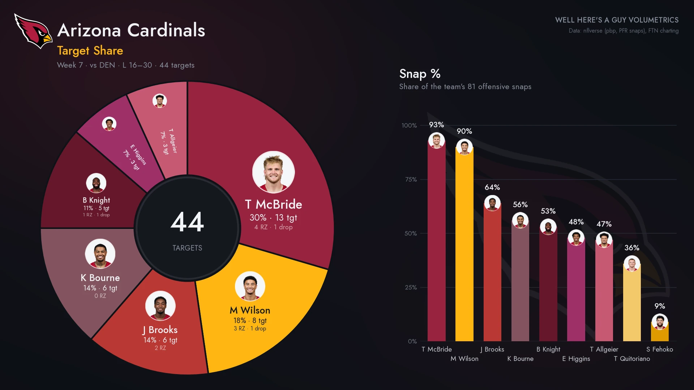
This passing game runs through T McBride: 13 targets, 30% of the share.
Why this take
- T McBride: 29.5% target share (>= 28%)
Atlanta Falcons

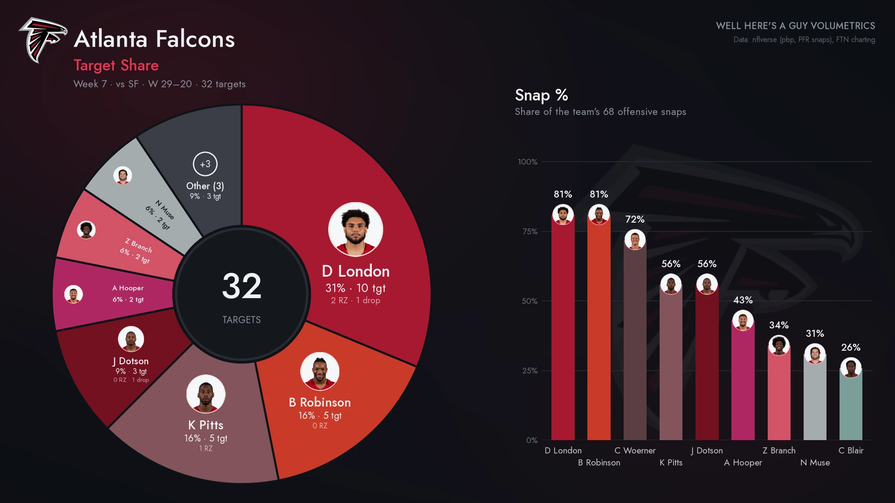
This passing game runs through D London: 10 targets, 31% of the share. D London also got 2 of the team's 5 red-zone targets, and that's where touchdowns come from. B Robinson had 5 targets out of the backfield (16%). That's real PPR value.
Why this take
- D London: 31.2% target share (>= 28%)
- D London: 2 of 5 team red-zone targets
- B Robinson (RB): 16% target share
Baltimore Ravens

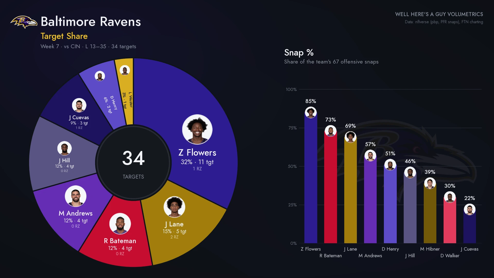
Z Flowers is the clear No. 1 here with 32% of the targets (11). J Lane got 2 of the team's 4 red-zone targets, and that's where touchdowns come from.
Why this take
- Z Flowers: 32.4% target share (>= 28%)
- J Lane: 2 of 4 team red-zone targets
Carolina Panthers

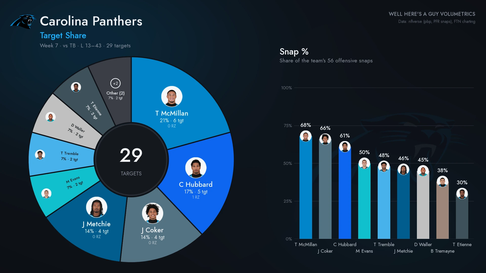
J Coker only saw 14% of the targets after averaging 25%, even on 66% of the snaps. The role is still there. This is a buy-low window. This passing offense is a mess: no receiver cleared 75% of the snaps and nobody got a real share of the targets (top guy was 21%). Hard to trust anyone here until something changes. C Hubbard had 5 targets out of the backfield (17%). That's real PPR value.
Why this take
- J Coker: 25% prior avg -> 14%; snaps 68% -> 66%
- top share 21% (< 25%), 4 players >= 10%, max WR snaps 68%
- C Hubbard (RB): 17% target share
Chicago Bears

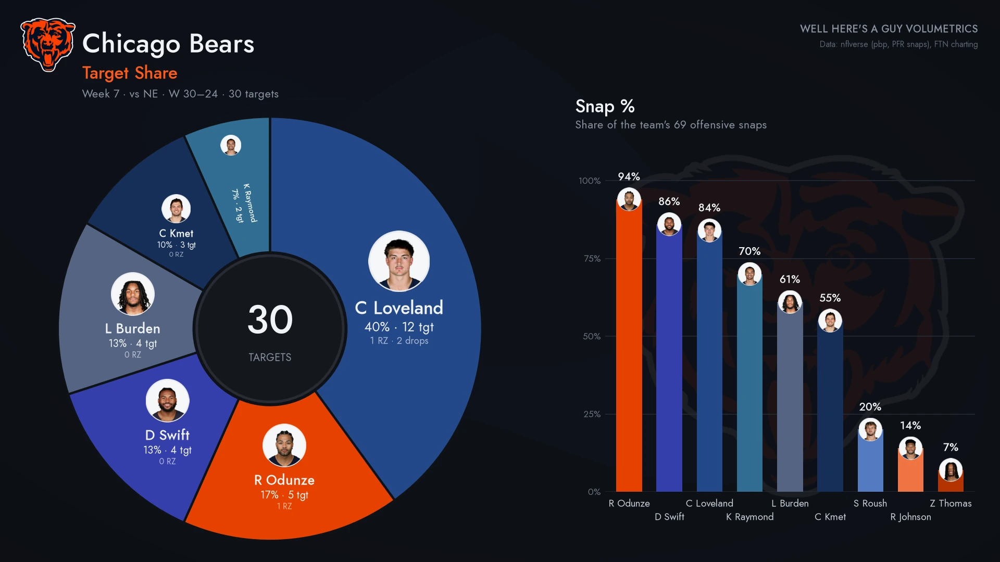
12 targets for C Loveland. That's 40% of the pie, and it went for 7-69, 1 TD. Any time a guy gets over 40% of the looks, you expect a big day, and he delivered. C Loveland did drop 2 balls, which is the kind of thing that costs you targets if it keeps up.
Why this take
- C Loveland: 12/30 = 40.0% target share (>= 40%)
- C Loveland: 2 drops (FTN)
Cincinnati Bengals

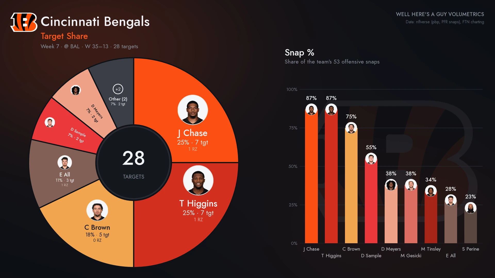
Look at how tight J Chase and T Higgins are: 7 targets to 7. C Brown had 5 targets out of the backfield (18%). That's real PPR value.
Why this take
- J Chase 25.0% vs T Higgins 25.0% (gap <= 4%)
- C Brown (RB): 18% target share
Cleveland Browns

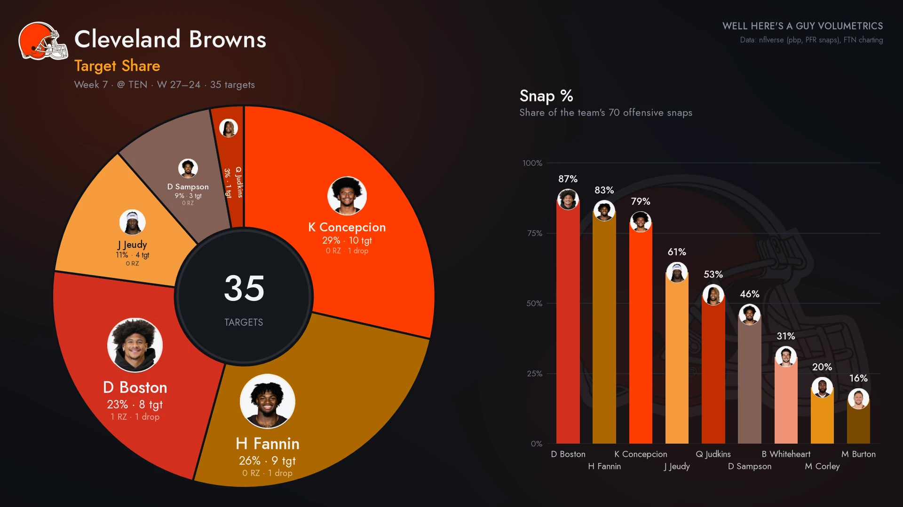
K Concepcion (29%) and H Fannin (26%) are a lot closer than most people think. H Fannin actually played more snaps (83% to 79%).
Why this take
- K Concepcion 28.6% vs H Fannin 25.7% (gap <= 4%)
Dallas Cowboys

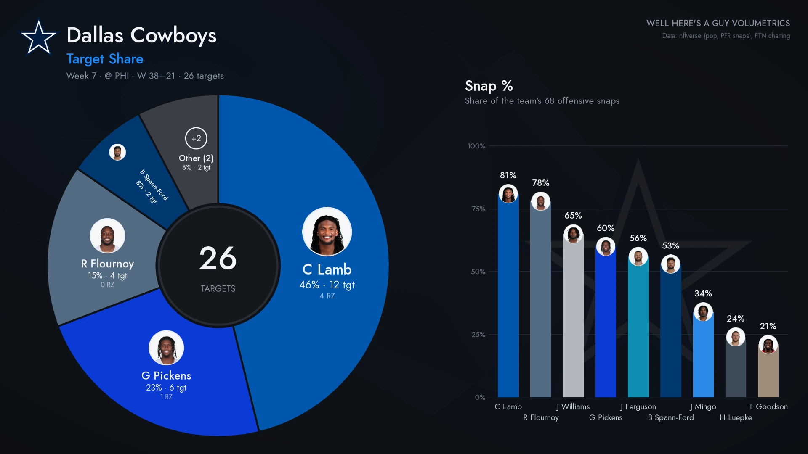
12 targets for C Lamb. That's 46% of the pie, and it went for 5-74, 2 TDs. Any time a guy gets over 40% of the looks, you expect a big day, and he delivered. Notice G Pickens earned 6 targets while only playing 60% of the snaps. That's a guy getting open when he's out there. C Lamb also got 4 of the team's 6 red-zone targets, and that's where touchdowns come from.
Why this take
- C Lamb: 12/26 = 46.2% target share (>= 40%)
- G Pickens: 23% target share on 60% snaps
- C Lamb: 4 of 6 team red-zone targets
Denver Broncos

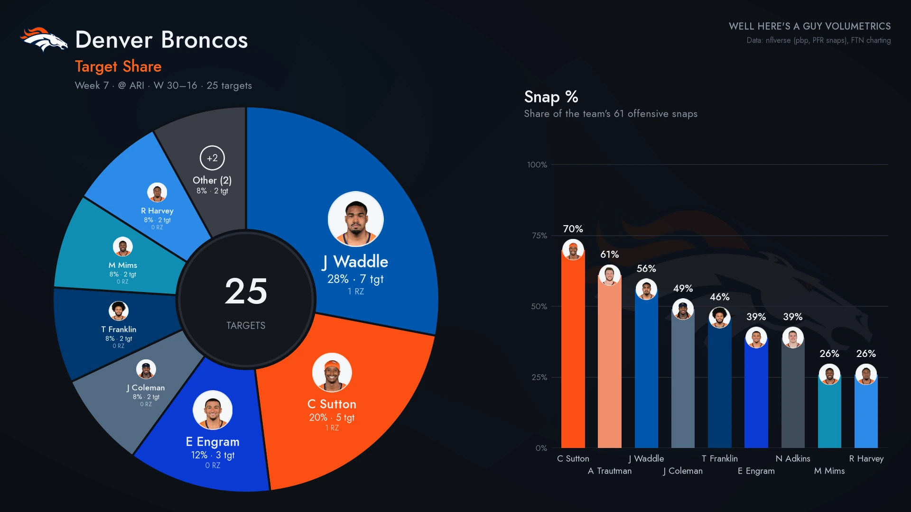
J Waddle is the clear No. 1 here with 28% of the targets (7). No wide receiver played more than 70% of the snaps, so a rotation is capping everybody's ceiling.
Why this take
- J Waddle: 28.0% target share (>= 28%)
- max WR snap share 70% (< 75%)
Detroit Lions

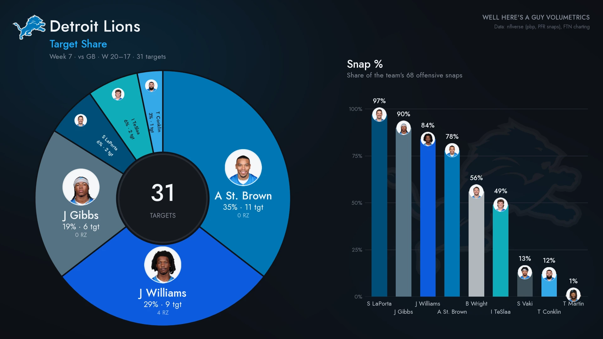
A St. Brown is the clear No. 1 here with 35% of the targets (11). Notice J Williams is trending up: 29% of the targets this week vs 15% coming in. S LaPorta only saw 6% of the targets after averaging 19%, even on 97% of the snaps. The role is still there. This is a buy-low window. J Williams also got 4 of the team's 6 red-zone targets, and that's where touchdowns come from.
Why this take
- A St. Brown: 35.5% target share (>= 28%)
- J Williams: 15% prior avg -> 29% (+14%)
- S LaPorta: 19% prior avg -> 6%; snaps 88% -> 97%
- J Williams: 4 of 6 team red-zone targets
Green Bay Packers

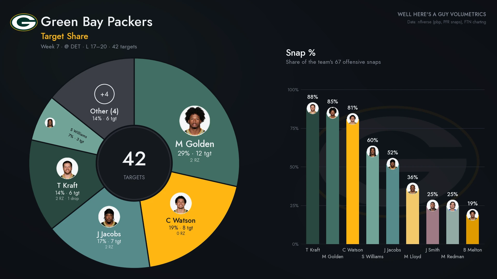
M Golden is the clear No. 1 here with 29% of the targets (12). J Jacobs had 7 targets out of the backfield (17%). That's real PPR value.
Why this take
- M Golden: 28.6% target share (>= 28%)
- J Jacobs (RB): 17% target share
Houston Texans

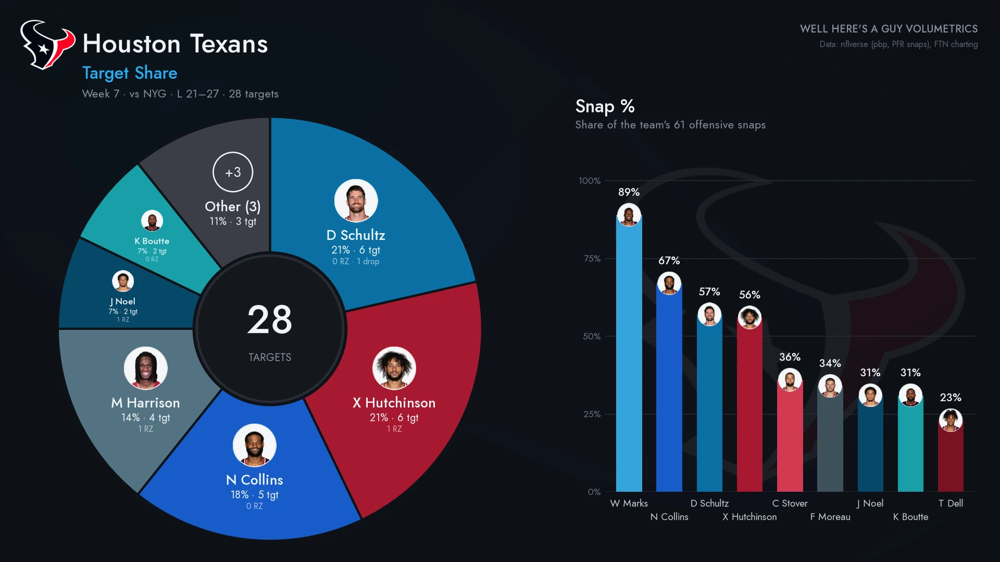
D Schultz (21%) and X Hutchinson (21%) are a lot closer than most people think. And X Hutchinson had the bigger red-zone role (1 RZ to 0). This passing offense is a mess: no receiver cleared 75% of the snaps and nobody got a real share of the targets (top guy was 21%). Hard to trust anyone here until something changes.
Why this take
- D Schultz 21.4% vs X Hutchinson 21.4% (gap <= 4%)
- top share 21% (< 25%), 4 players >= 10%, max WR snaps 67%
Indianapolis Colts

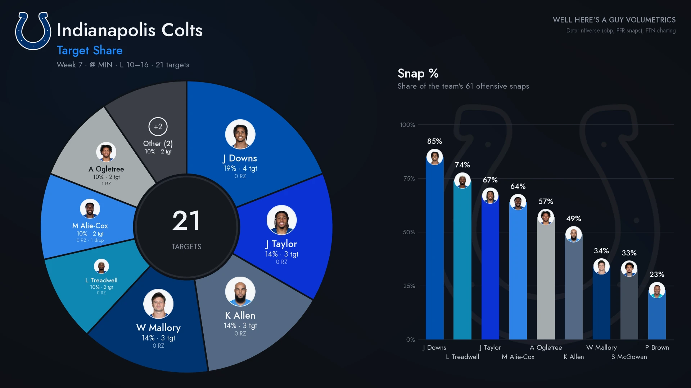
T Warren didn't play a snap, and A Ogletree is the guy who soaked it up: 10% of the targets, up from 2%. Keep him in mind if T Warren misses more time. A lot of targets spread around this week: 4 guys hit double-digit share and nobody topped 19%. Only 21 targets to go around, so even a big share doesn't buy much.
Why this take
- T Warren averaged 21% share before, 0 offensive snaps this week; A Ogletree share 2% -> 10%, snaps 27% -> 57%
- top share 19% (< 25%), 4 players >= 10%
- 21 team targets (<= 22)
Kansas City Chiefs

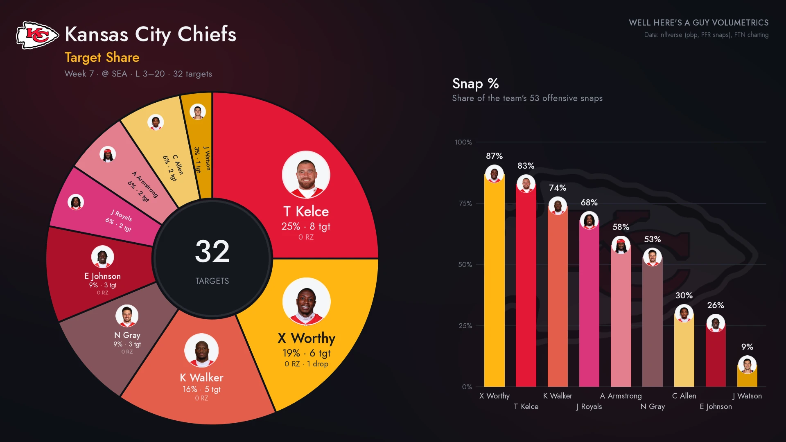
With R Rice not taking an offensive snap, notice J Royals was out there for 68% of the snaps, up from 43%. The targets haven't caught up yet, but if R Rice is out another week, he's a sneaky pickup. K Walker had 5 targets out of the backfield (16%). That's real PPR value. T Kelce commanded 25% of the targets at tight end, and that's a weekly-starter role at the position.
Why this take
- R Rice averaged 15% share before, 0 offensive snaps this week; J Royals share 8% -> 6%, snaps 43% -> 68%
- K Walker (RB): 16% target share
- T Kelce (TE): 25% target share
Las Vegas Raiders

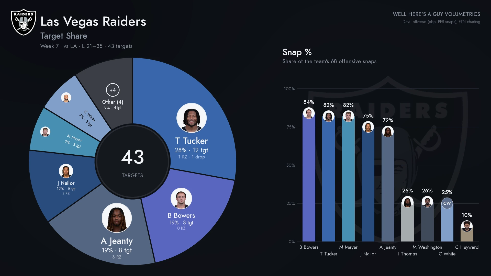
Don't panic on B Bowers: 19% of the looks this week, but he was at 29% coming in and still played 84% of the snaps. I'd buy low. Notice M Mayer actually played 82% of the snaps but only got 3 targets. A Jeanty had 8 targets out of the backfield (19%). That's real PPR value.
Why this take
- B Bowers: 29% prior avg -> 19%; snaps 82% -> 84%
- M Mayer: 82% snaps but 3 targets (7%)
- A Jeanty (RB): 19% target share
Los Angeles Rams

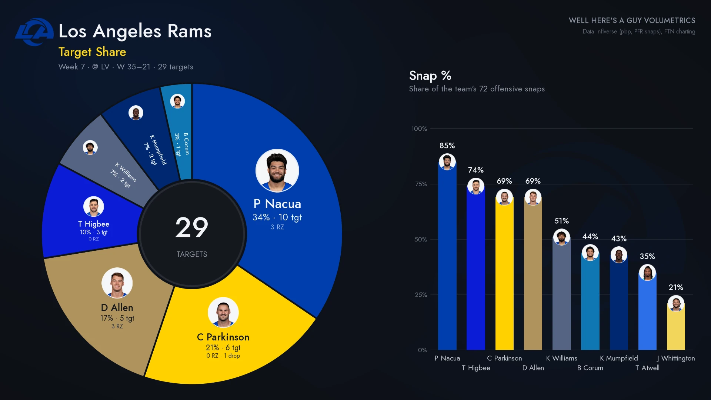
D Adams didn't play a snap, and D Allen is the guy who soaked it up: 17% of the targets, up from 3%. Keep him in mind if D Adams misses more time. P Nacua is the clear No. 1 here with 34% of the targets (10). Notice C Parkinson is trending up: 21% of the targets this week vs 8% coming in. P Nacua also got 3 of the team's 6 red-zone targets, and that's where touchdowns come from.
Why this take
- D Adams averaged 21% share before, 0 offensive snaps this week; D Allen share 3% -> 17%, snaps 42% -> 69%
- P Nacua: 34.5% target share (>= 28%)
- C Parkinson: 8% prior avg -> 21% (+13%)
- P Nacua: 3 of 6 team red-zone targets
Miami Dolphins

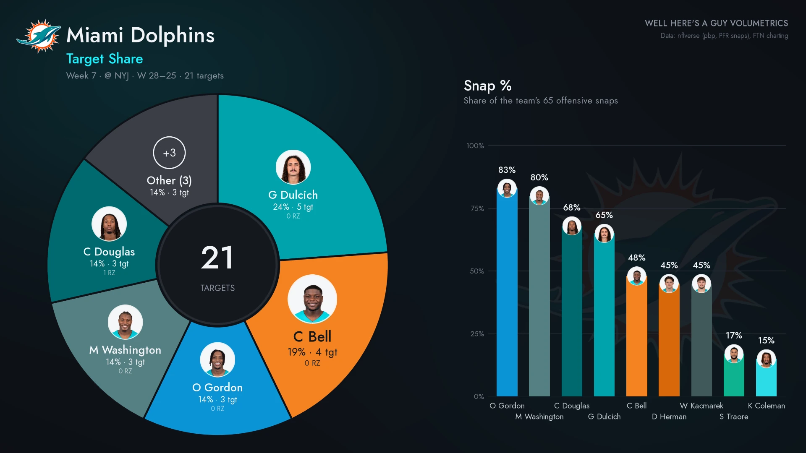
With D Achane not taking an offensive snap, O Gordon jumped to 14% of the targets after averaging 4%. If D Achane is out another week, O Gordon is a sneaky pickup. Don't panic on M Washington: 14% of the looks this week, but he was at 28% coming in and still played 80% of the snaps. I'd buy low. C Bell pulled 19% of the targets on just 48% of the snaps. If that snap share climbs, he's a sneaky add.
Why this take
- D Achane averaged 16% share before, 0 offensive snaps this week; O Gordon share 4% -> 14%, snaps 46% -> 83%
- M Washington: 28% prior avg -> 14%; snaps 85% -> 80%
- C Bell: 19% target share on 48% snaps
Minnesota Vikings

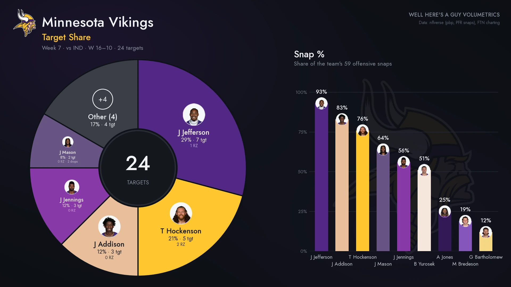
This passing game runs through J Jefferson: 7 targets, 29% of the share. T Hockenson got 2 of the team's 4 red-zone targets, and that's where touchdowns come from. J Mason did drop 2 balls, which is the kind of thing that costs you targets if it keeps up.
Why this take
- J Jefferson: 29.2% target share (>= 28%)
- T Hockenson: 2 of 4 team red-zone targets
- J Mason: 2 drops (FTN)
New England Patriots

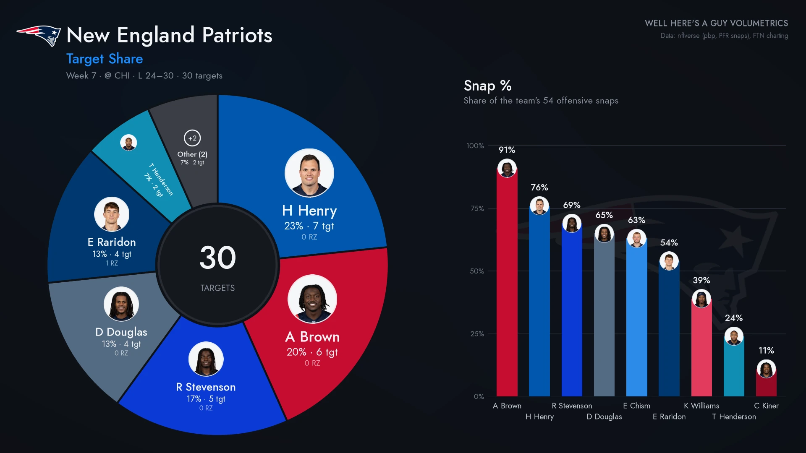
With M Hollins not taking an offensive snap, H Henry jumped to 23% of the targets after averaging 14%. If M Hollins is out another week, H Henry is a sneaky pickup. No one dominated here. 5 different players got 10%+ of the looks, which is fine for the offense and tough for fantasy. R Stevenson had 5 targets out of the backfield (17%). That's real PPR value.
Why this take
- M Hollins averaged 17% share before, 0 offensive snaps this week; H Henry share 14% -> 23%, snaps 74% -> 76%
- top share 23% (< 25%), 5 players >= 10%
- R Stevenson (RB): 17% target share
New Orleans Saints

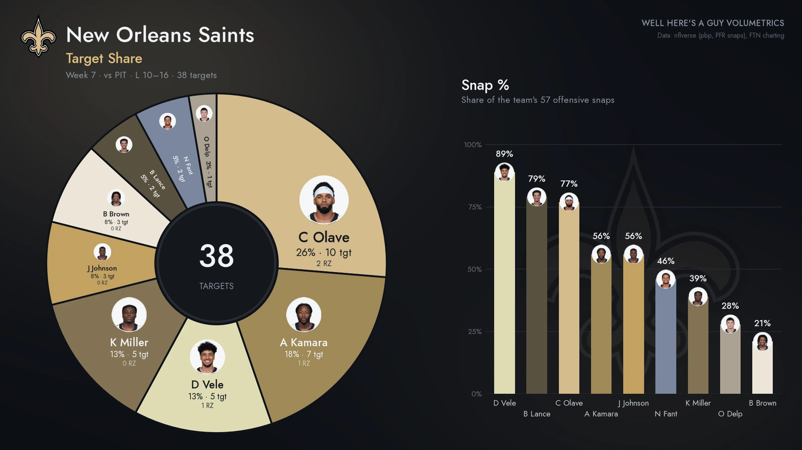
Notice A Kamara earned 7 targets while only playing 56% of the snaps. That's a guy getting open when he's out there. C Olave got 2 of the team's 4 red-zone targets, and that's where touchdowns come from.
Why this take
- A Kamara: 18% target share on 56% snaps
- C Olave: 2 of 4 team red-zone targets
New York Giants

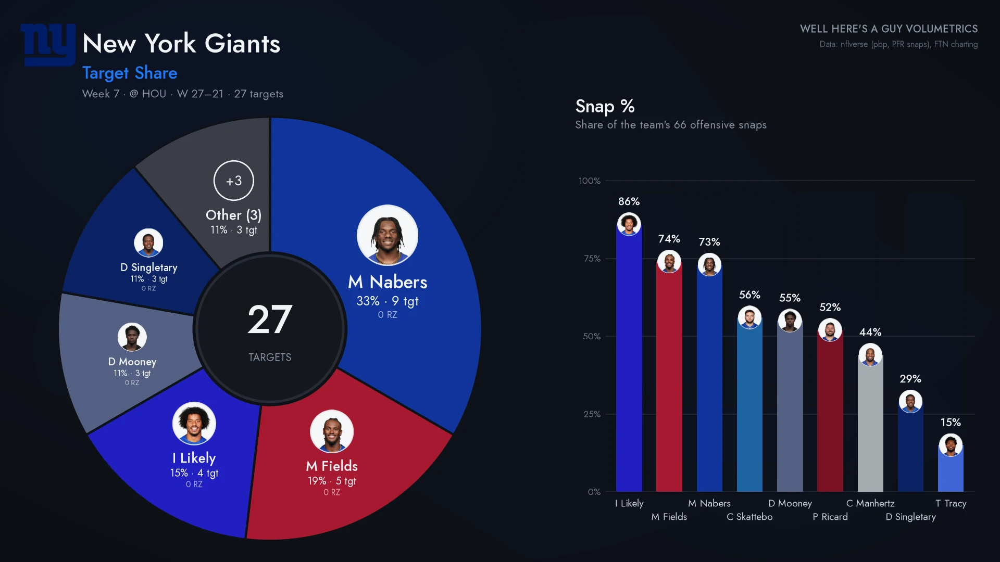
This passing game runs through M Nabers: 9 targets, 33% of the share. I Likely only saw 15% of the targets after averaging 29%, even on 86% of the snaps. The role is still there. This is a buy-low window. No wide receiver played more than 74% of the snaps, so a rotation is capping everybody's ceiling.
Why this take
- M Nabers: 33.3% target share (>= 28%)
- I Likely: 29% prior avg -> 15%; snaps 73% -> 86%
- max WR snap share 74% (< 75%)
New York Jets

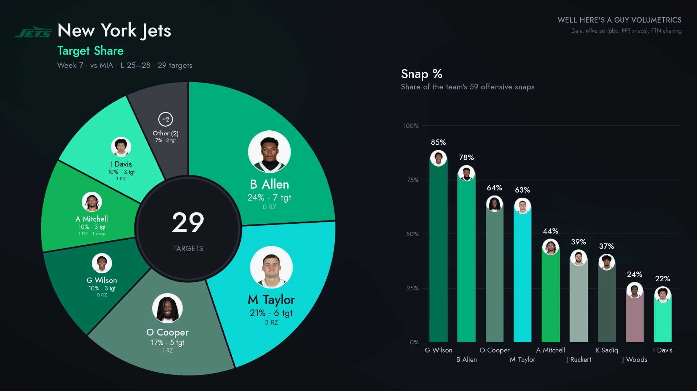
B Allen (24%) and M Taylor (21%) are a lot closer than most people think. And M Taylor had the bigger red-zone role (3 RZ to 0). G Wilson only saw 10% of the targets after averaging 29%, even on 85% of the snaps. The role is still there. This is a buy-low window. M Taylor also got 3 of the team's 7 red-zone targets, and that's where touchdowns come from. A lot of targets spread around this week: 6 guys hit double-digit share and nobody topped 24%.
Why this take
- B Allen 24.1% vs M Taylor 20.7% (gap <= 4%)
- G Wilson: 29% prior avg -> 10%; snaps 91% -> 85%
- M Taylor: 3 of 7 team red-zone targets
- top share 24% (< 25%), 6 players >= 10%
Philadelphia Eagles

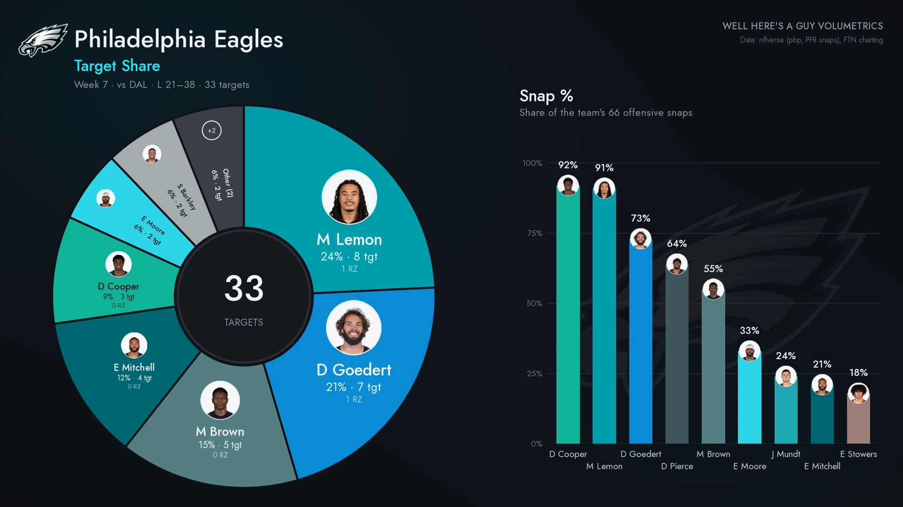
D Smith didn't play a snap, and M Brown is the guy who soaked it up: 15% of the targets, up from 0%. Keep him in mind if D Smith misses more time. M Lemon (24%) and D Goedert (21%) are a lot closer than most people think. A lot of targets spread around this week: 4 guys hit double-digit share and nobody topped 24%.
Why this take
- D Smith averaged 32% share before, 0 offensive snaps this week; M Brown share 0% -> 15%, snaps 22% -> 55%
- M Lemon 24.2% vs D Goedert 21.2% (gap <= 4%)
- top share 24% (< 25%), 4 players >= 10%
Pittsburgh Steelers

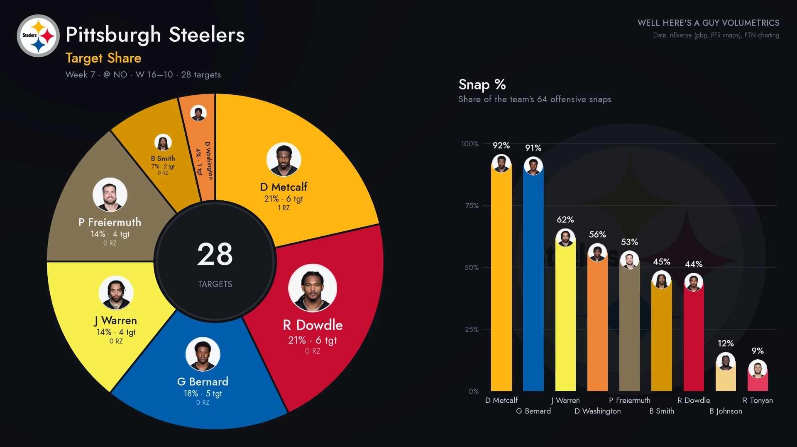
D Metcalf (21%) and R Dowdle (21%) are a lot closer than most people think. A lot of targets spread around this week: 5 guys hit double-digit share and nobody topped 21%.
Why this take
- D Metcalf 21.4% vs R Dowdle 21.4% (gap <= 4%)
- top share 21% (< 25%), 5 players >= 10%
San Francisco 49ers

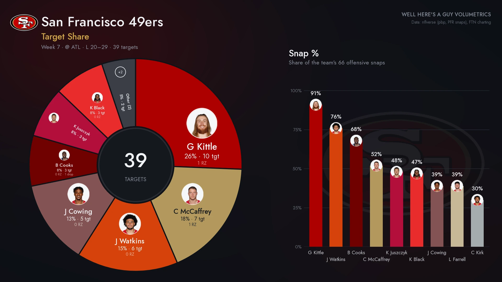
M Evans didn't play a snap, and J Watkins is the guy who soaked it up: 15% of the targets, up from 3%. Keep him in mind if M Evans misses more time. Notice C McCaffrey earned 7 targets while only playing 52% of the snaps. That's a guy getting open when he's out there. G Kittle commanded 26% of the targets at tight end, and that's a weekly-starter role at the position.
Why this take
- M Evans averaged 23% share before, 0 offensive snaps this week; J Watkins share 3% -> 15%, snaps 45% -> 76%
- C McCaffrey: 18% target share on 52% snaps
- G Kittle (TE): 26% target share
Seattle Seahawks

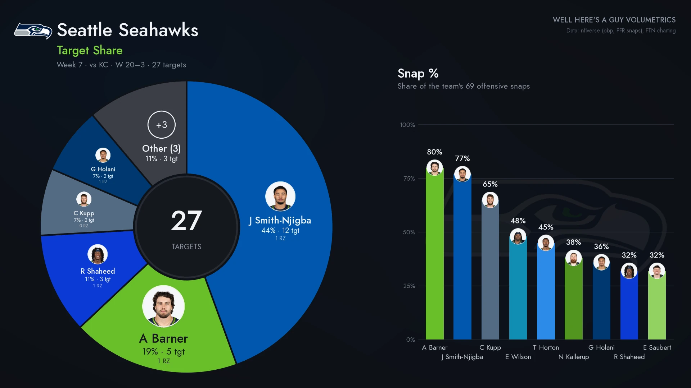
12 targets for J Smith-Njigba. That's 44% of the pie, and it went for 9-150, 1 TD. Any time a guy gets over 40% of the looks, you expect a big day, and he delivered.
Why this take
- J Smith-Njigba: 12/27 = 44.4% target share (>= 40%)
Tampa Bay Buccaneers

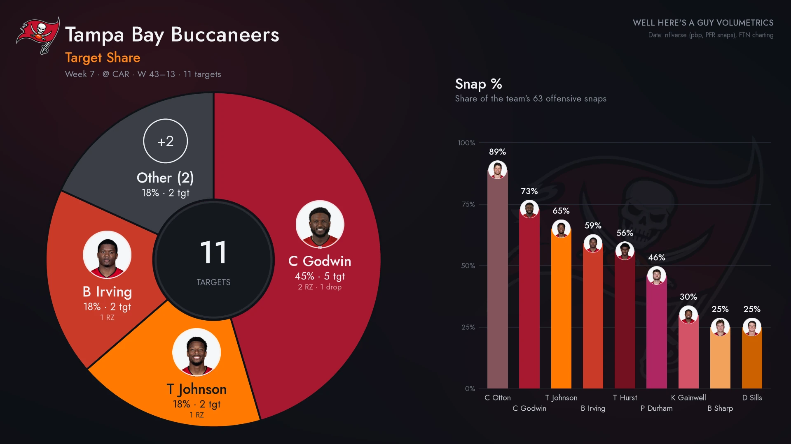
C Godwin soaked up 45% of the targets (5 looks) but only got 4-27 out of it. That kind of volume doesn't stay quiet for long. T Johnson's role is growing: 18% of the looks after averaging 7%. No wide receiver played more than 73% of the snaps, so a rotation is capping everybody's ceiling.
Why this take
- C Godwin: 5/11 = 45.5% target share (>= 40%)
- T Johnson: 7% prior avg -> 18% (+11%)
- max WR snap share 73% (< 75%)
Tennessee Titans

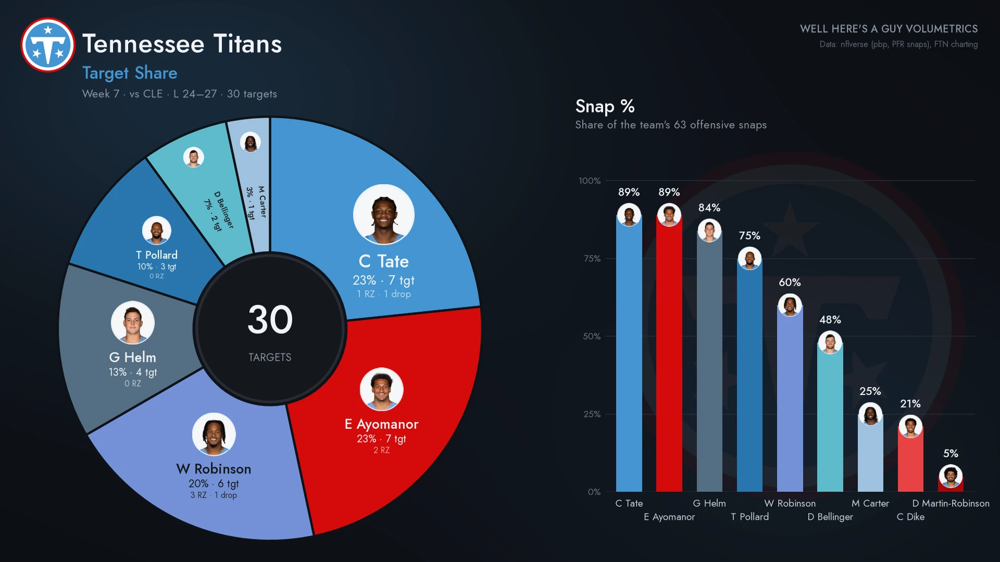
Look at how tight C Tate and E Ayomanor are: 7 targets to 7. And E Ayomanor had the bigger red-zone role (2 RZ to 1). W Robinson pulled 20% of the targets on just 60% of the snaps. If that snap share climbs, he's a sneaky add. W Robinson also got 3 of the team's 7 red-zone targets, and that's where touchdowns come from. A lot of targets spread around this week: 5 guys hit double-digit share and nobody topped 23%.
Why this take
- C Tate 23.3% vs E Ayomanor 23.3% (gap <= 4%)
- W Robinson: 20% target share on 60% snaps
- W Robinson: 3 of 7 team red-zone targets
- top share 23% (< 25%), 5 players >= 10%
Week 7 backfields
| Top 8 rushers | ||||||
|---|---|---|---|---|---|---|
| 29 | 116 | 91% | 90% | 6 | 25.8 | |
| 25 | 103 | 74% | 83% | 6 | 26.8 | |
| 25 | 129 | 86% | 75% | 7 | 25.9 | |
| 25 | 155 | 68% | 65% | 3 | 14.8 | |
| 24 | 106 | 51% | 59% | 5 | 19.4 | |
| 24 | 100 | 62% | 48% | 2 | 12.7 | |
| 22 | 78 | 85% | 86% | 5 | 19.1 | |
| 20 | 63 | 80% | 81% | 5 | 17.1 |
Tap a back to jump to his team, or a column to re-sort. HVT = catches plus carries inside the 10. xFP = the PPR points an average back would score on that workload.
League view

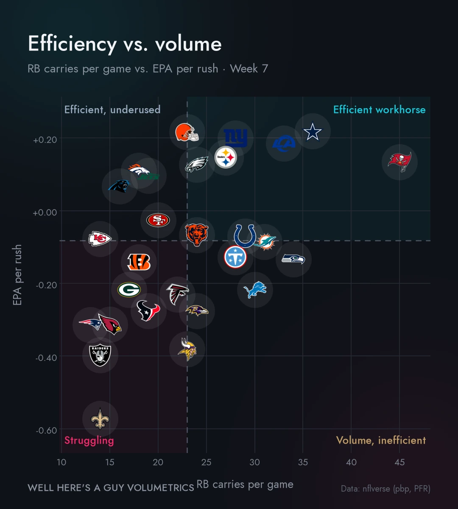

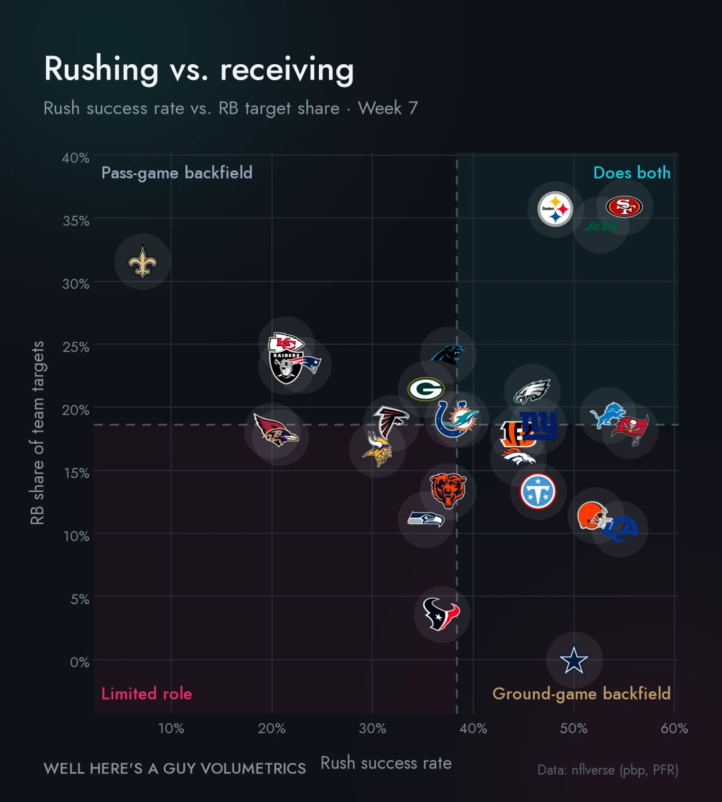

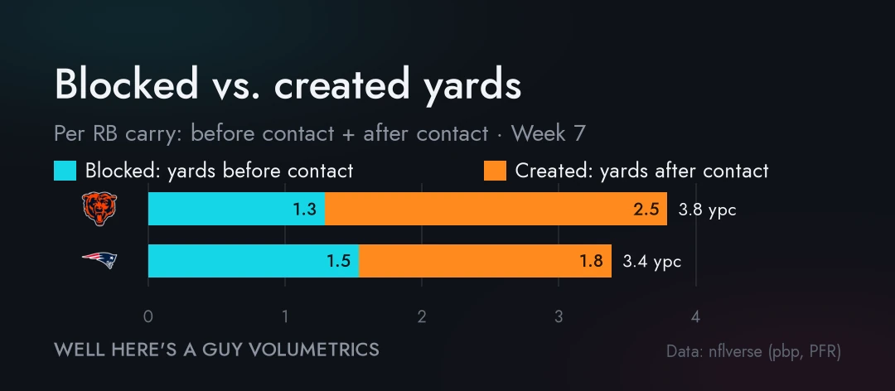

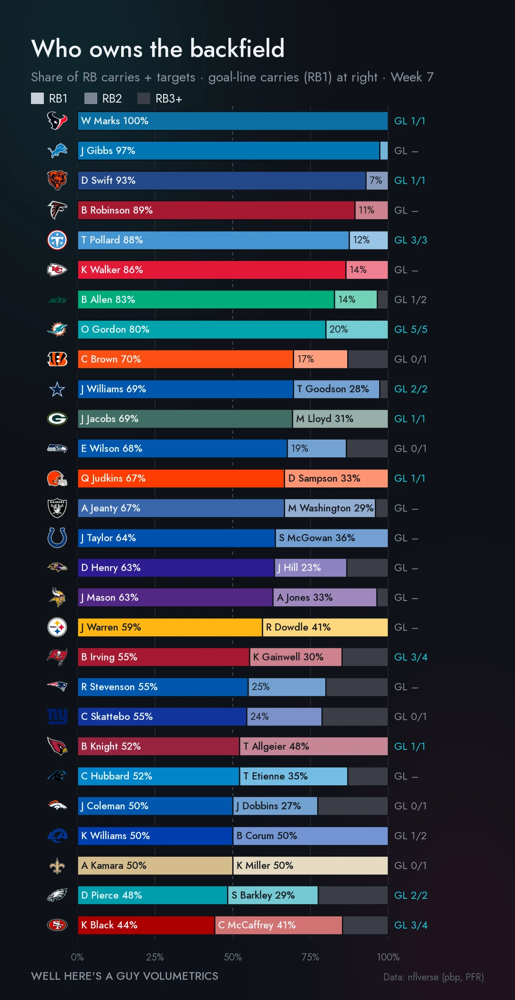
Team by team
Arizona Cardinals

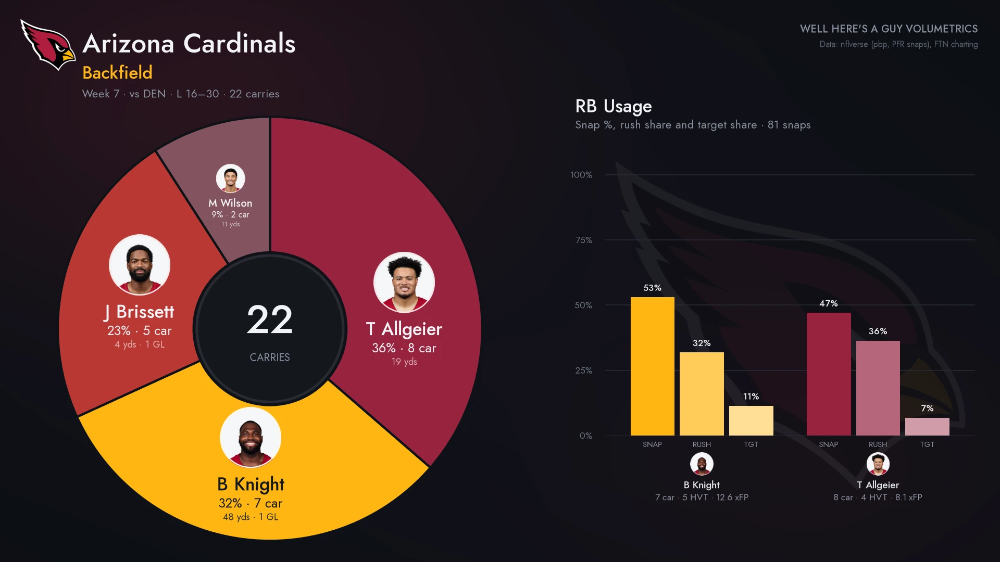
J Love didn't play in Week 7 after taking 64% of the carries early in this stretch. T Allgeier took 36% of the carries in Week 7. If J Love sits again, T Allgeier is the add. This is a committee: T Allgeier 36% of the carries, B Knight 32%. B Knight has the passing-down edge with 5 targets to 3. Hard to trust either as more than a flex.
Why this take
- J Love: 64% rush share early, missed [6, 7]
- T Allgeier 36% / B Knight 32% of carries
Atlanta Falcons

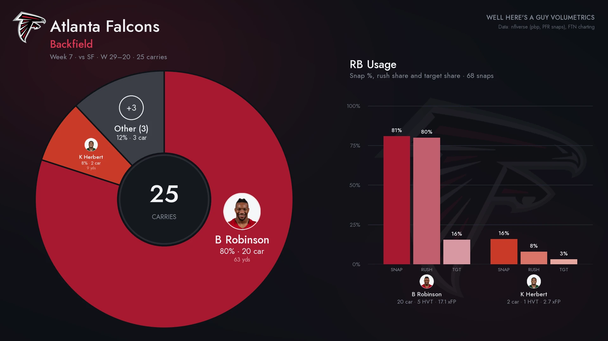
B Robinson is a true workhorse: 81% of the snaps and 80% of the carries (20). That's been his job all 4 games (70% of the carries).
Why this take
- B Robinson: 81% snaps, 80% rush share
Baltimore Ravens

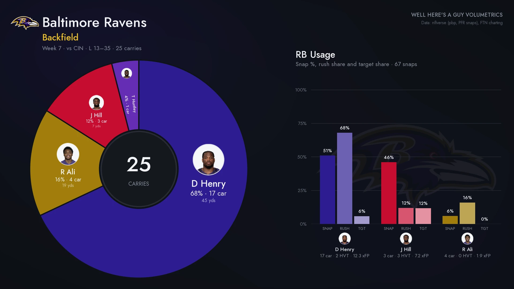
D Henry is the lead back (17 carries, 68%) but not a workhorse: he played 51% of the snaps and R Ali still got 4 carries. J Hill is the passing-down back: 4 targets (12% of the team's) on 46% of the snaps. That's real value in PPR.
Why this take
- D Henry: 68% rush share, 51% snaps
- J Hill: 12% target share, 12% rush share
Carolina Panthers

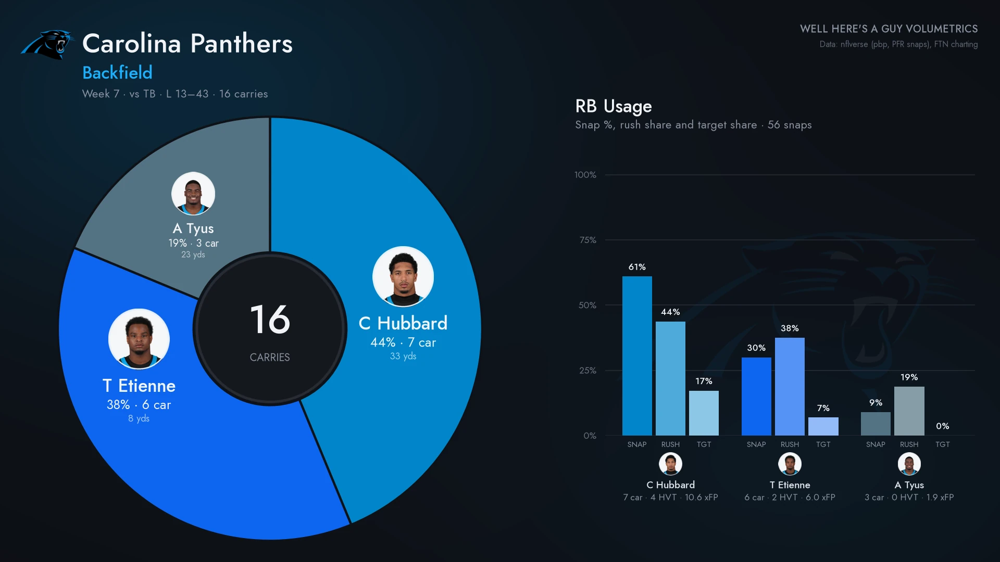
This is a committee: C Hubbard 44% of the carries, T Etienne 38%. C Hubbard has the passing-down edge with 5 targets to 2. Hard to trust either as more than a flex.
Why this take
- C Hubbard 44% / T Etienne 38% of carries
Chicago Bears

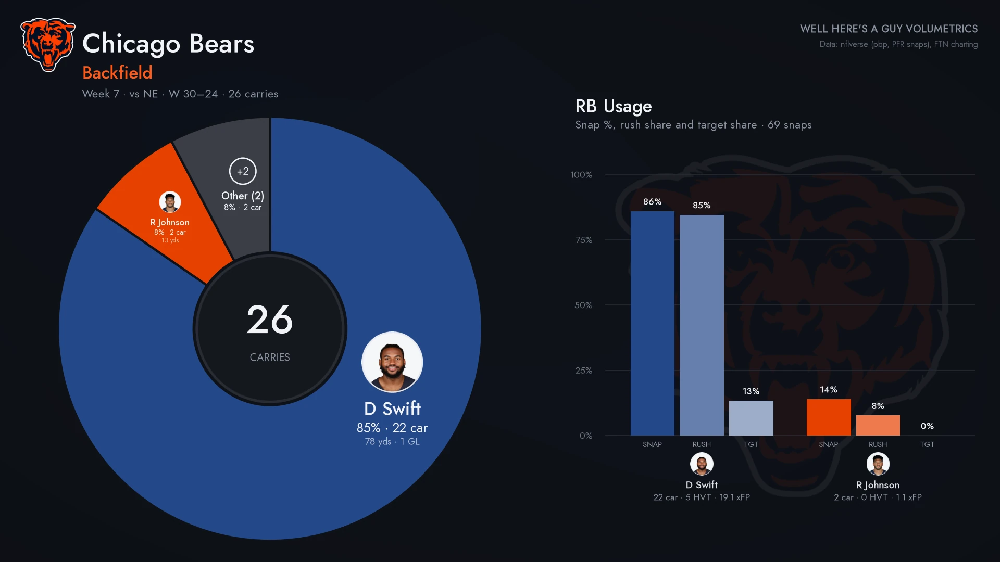
No committee here. D Swift played 86% of the snaps and took 22 of 26 carries.
Why this take
- D Swift: 86% snaps, 85% rush share
Cincinnati Bengals

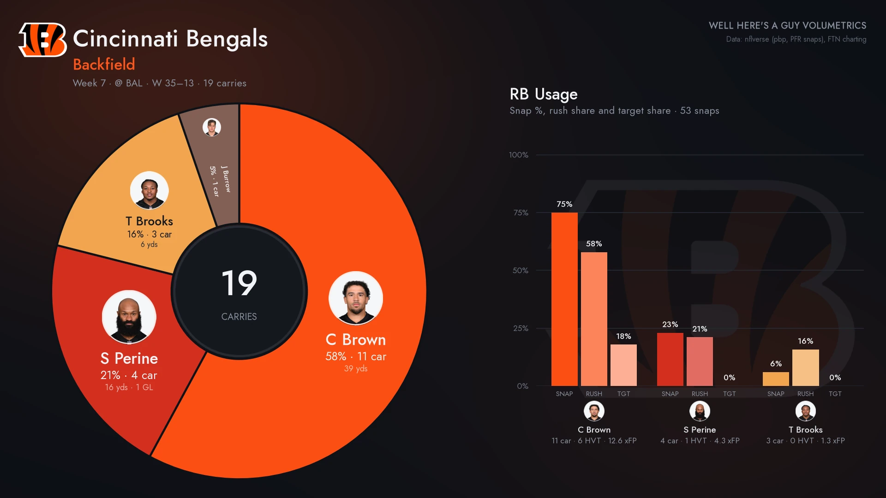
C Brown is the lead back (11 carries, 58%) but not a workhorse: he played 75% of the snaps and S Perine still got 4 carries. C Brown had 6 high-value touches (catches plus carries inside the 10). Those are the touches that score fantasy points.
Why this take
- C Brown: 58% rush share, 75% snaps
- C Brown: 6 high-value touches
Cleveland Browns

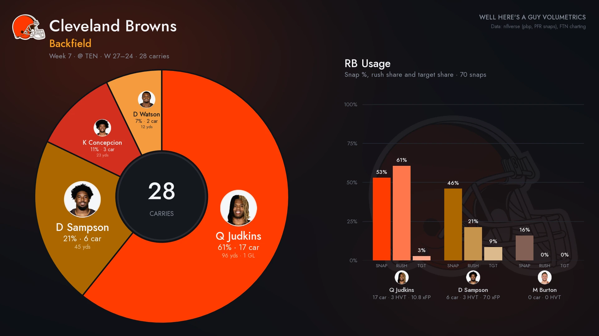
Q Judkins didn't play in Week 6 after taking 70% of the carries early in this stretch. D Sampson took 21% of the carries in Week 7. If Q Judkins sits again, D Sampson is the add.
Why this take
- Q Judkins: 70% rush share early, missed [6]
Dallas Cowboys

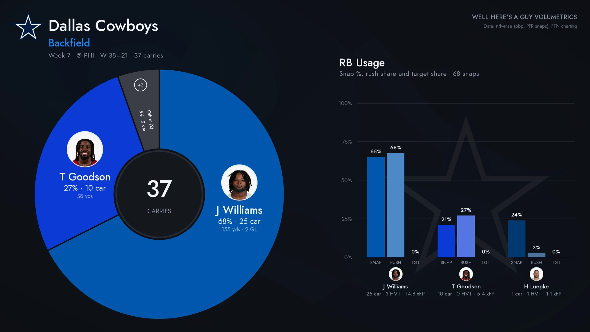
J Williams is the lead back (25 carries, 68%) but not a workhorse: he played 65% of the snaps and T Goodson still got 10 carries. J Williams also got both of the team's carries inside the 5. That's the touchdown role.
Why this take
- J Williams: 68% rush share, 65% snaps
- J Williams: 2 of 2 carries inside the 5
Denver Broncos

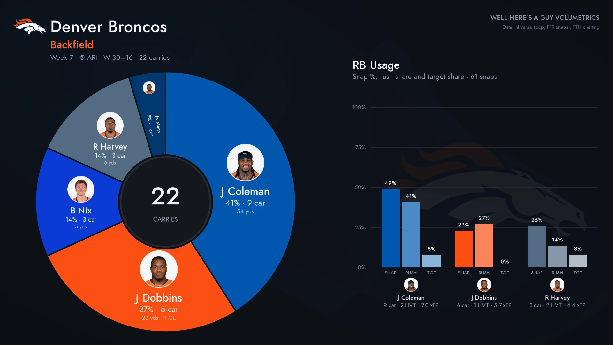
J Coleman led the backfield with 9 carries (41%), with J Dobbins next at 6 (27%).
Why this take
- top two by carries
Detroit Lions

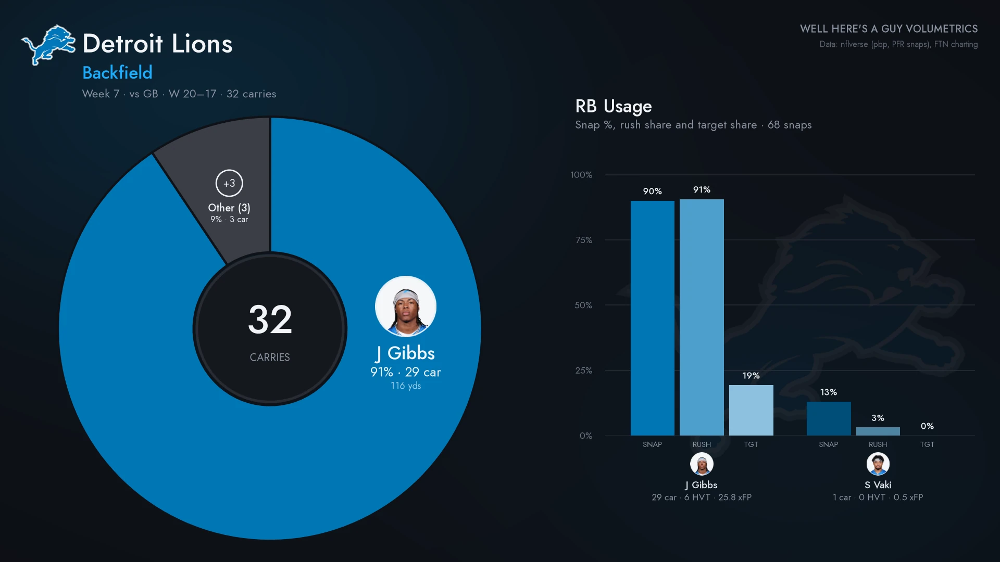
No committee here. J Gibbs played 90% of the snaps and took 29 of 32 carries. That's been his job all 4 games (85% of the carries). J Gibbs had 6 high-value touches (catches plus carries inside the 10). Those are the touches that score fantasy points.
Why this take
- J Gibbs: 90% snaps, 91% rush share
- J Gibbs: 6 high-value touches
Green Bay Packers

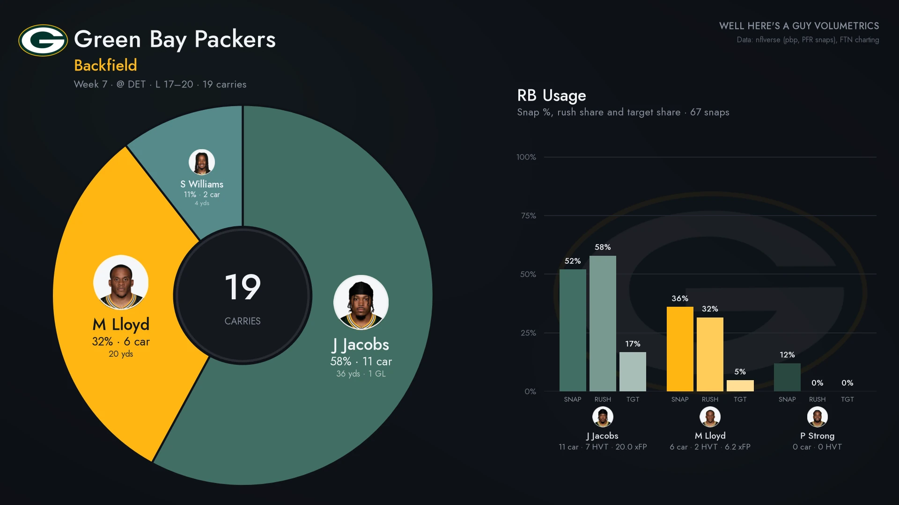
This is a committee: J Jacobs 58% of the carries, M Lloyd 32%. J Jacobs has the passing-down edge with 7 targets to 2. Hard to trust either as more than a flex. J Jacobs had 7 high-value touches (catches plus carries inside the 10). Those are the touches that score fantasy points.
Why this take
- J Jacobs 58% / M Lloyd 32% of carries
- J Jacobs: 7 high-value touches
Houston Texans

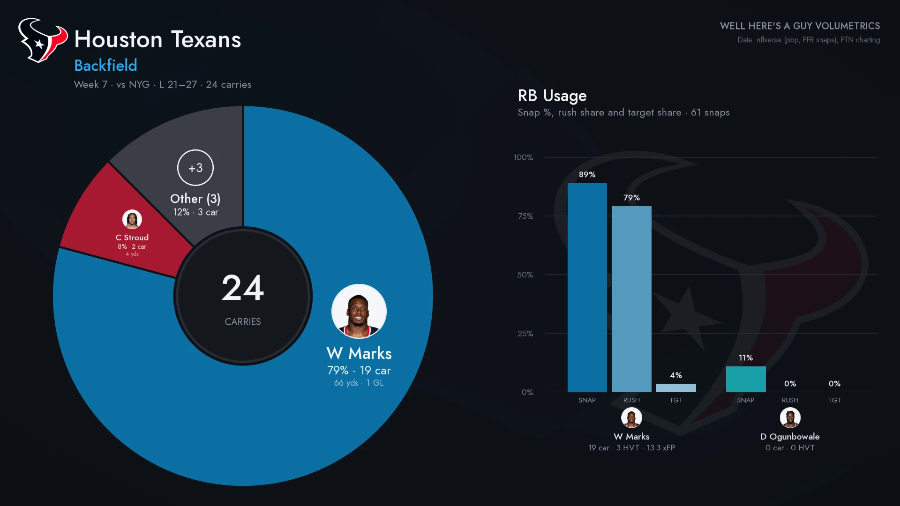
W Marks is a true workhorse: 89% of the snaps and 79% of the carries (19). That's been his job all 4 games (61% of the carries).
Why this take
- W Marks: 89% snaps, 79% rush share
Indianapolis Colts

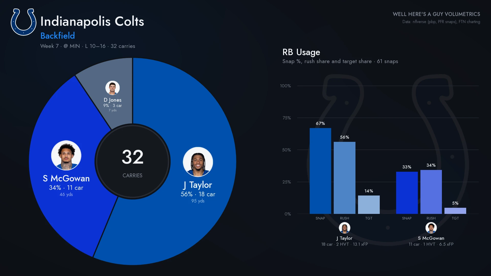
This is a committee: J Taylor 56% of the carries, S McGowan 34%. J Taylor has the passing-down edge with 3 targets to 1. Hard to trust either as more than a flex.
Why this take
- J Taylor 56% / S McGowan 34% of carries
Kansas City Chiefs

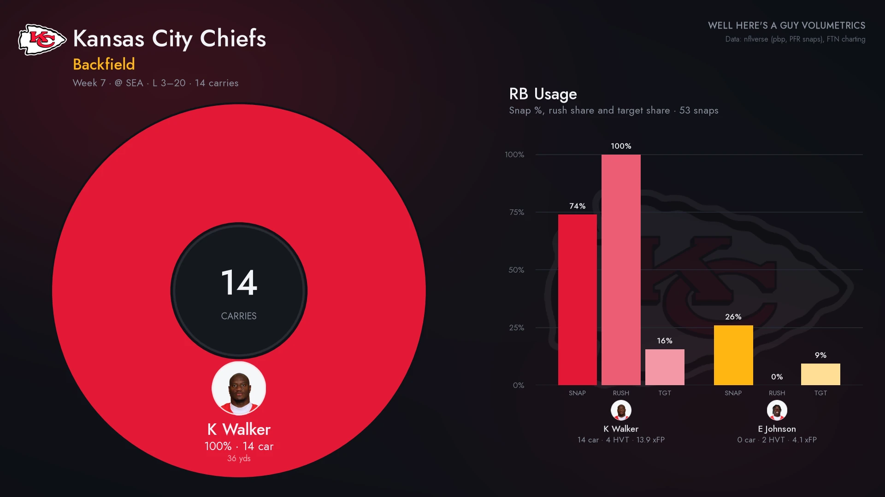
K Walker is a true workhorse: 74% of the snaps and 100% of the carries (14). That's been his job all 4 games (86% of the carries).
Why this take
- K Walker: 74% snaps, 100% rush share
Las Vegas Raiders

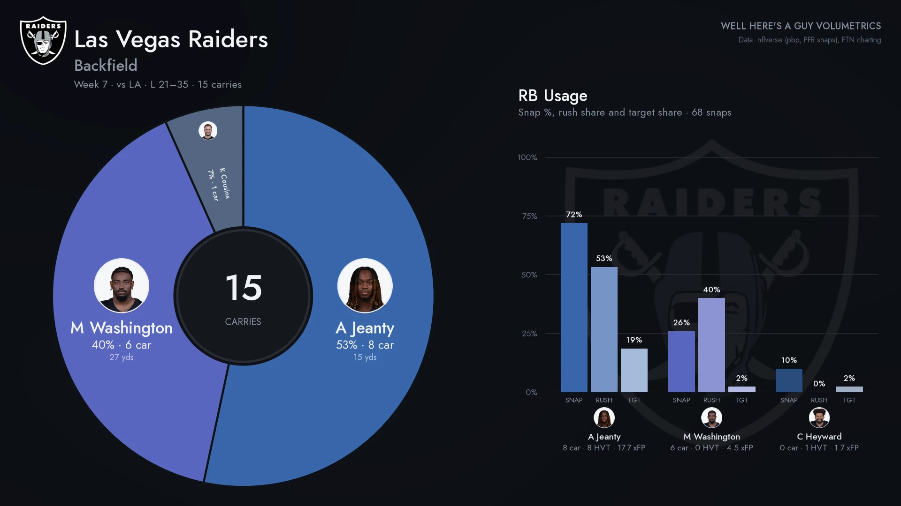
This is a committee: A Jeanty 53% of the carries, M Washington 40%. A Jeanty has the passing-down edge with 8 targets to 1. Hard to trust either as more than a flex. A Jeanty had 8 high-value touches (catches plus carries inside the 10). Those are the touches that score fantasy points.
Why this take
- A Jeanty 53% / M Washington 40% of carries
- A Jeanty: 8 high-value touches
Los Angeles Rams

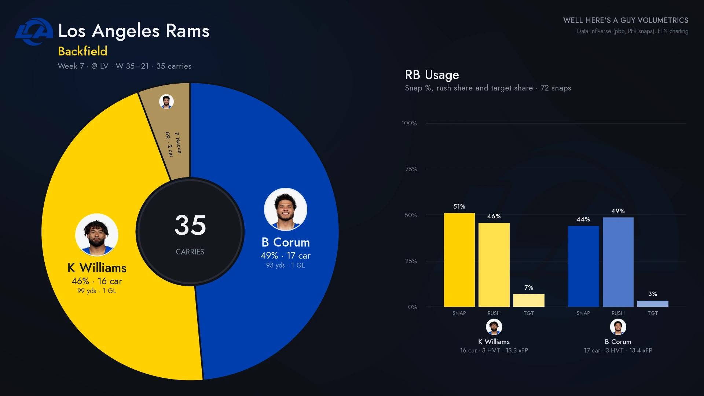
This is a committee: B Corum 49% of the carries, K Williams 46%. K Williams has the passing-down edge with 2 targets to 1. Hard to trust either as more than a flex.
Why this take
- B Corum 49% / K Williams 46% of carries
Miami Dolphins

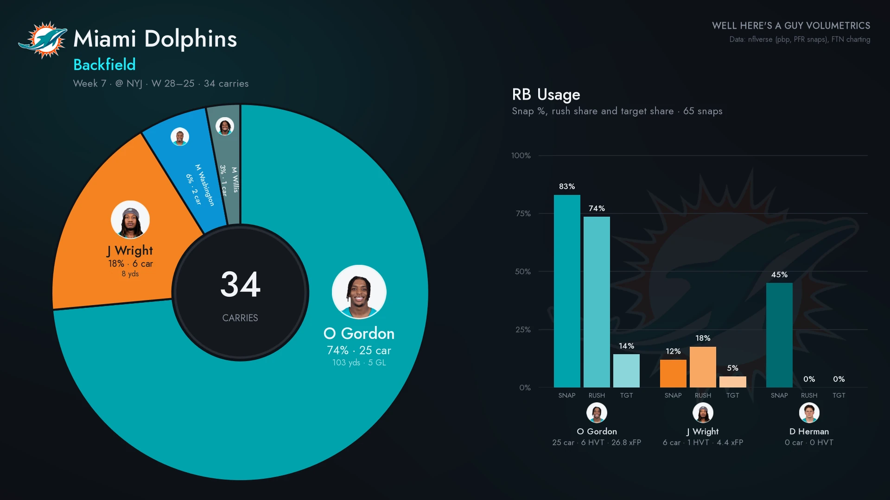
O Gordon is a true workhorse: 83% of the snaps and 74% of the carries (25). That's been his job all 4 games (65% of the carries). O Gordon also got all 5 of the team's carries inside the 5. That's the touchdown role.
Why this take
- O Gordon: 83% snaps, 74% rush share
- O Gordon: 5 of 5 carries inside the 5
Minnesota Vikings

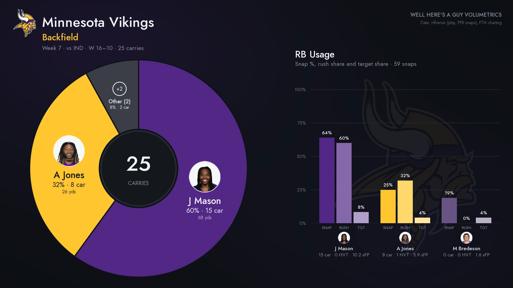
This is a committee: J Mason 60% of the carries, A Jones 32%. J Mason has the passing-down edge with 2 targets to 1. Hard to trust either as more than a flex.
Why this take
- J Mason 60% / A Jones 32% of carries
New England Patriots

Notice C Kiner's carries climbing: 12% of the rush share early in this stretch, 31% in the last two games. R Stevenson had 6 high-value touches (catches plus carries inside the 10). Those are the touches that score fantasy points.
Why this take
- C Kiner: rush share 12% -> 31% over 4
- R Stevenson: 6 high-value touches
New Orleans Saints

This is a committee: K Miller 50% of the carries, A Kamara 38%. A Kamara has the passing-down edge with 7 targets to 5. Hard to trust either as more than a flex. A Kamara had 7 high-value touches (catches plus carries inside the 10). Those are the touches that score fantasy points.
Why this take
- K Miller 50% / A Kamara 38% of carries
- A Kamara: 7 high-value touches
New York Giants

C Skattebo is the lead back (17 carries, 50%) but not a workhorse: he played 56% of the snaps and T Tracy still got 6 carries. D Singletary is the passing-down back: 3 targets (11% of the team's) on 29% of the snaps. That's real value in PPR.
Why this take
- C Skattebo: 50% rush share, 56% snaps
- D Singletary: 11% target share, 15% rush share
New York Jets

B Allen is a true workhorse: 78% of the snaps and 89% of the carries (17). That's been his job all 4 games (82% of the carries). I Davis is the passing-down back: 3 targets (10% of the team's) on 22% of the snaps. That's real value in PPR. B Allen had 7 high-value touches (catches plus carries inside the 10). Those are the touches that score fantasy points.
Why this take
- B Allen: 78% snaps, 89% rush share
- I Davis: 10% target share, 5% rush share
- B Allen: 7 high-value touches
Philadelphia Eagles

D Pierce is the lead back (14 carries, 58%) but not a workhorse: he played 64% of the snaps and S Barkley still got 7 carries. D Pierce also got both of the team's carries inside the 5. That's the touchdown role. E Mitchell is the passing-down back: 4 targets (12% of the team's) on 21% of the snaps. That's real value in PPR.
Why this take
- D Pierce: 58% rush share, 64% snaps
- D Pierce: 2 of 2 carries inside the 5
- E Mitchell: 12% target share, 12% rush share
Pittsburgh Steelers

This is a committee: J Warren 67% of the carries, R Dowdle 33%. R Dowdle has the passing-down edge with 6 targets to 4. Hard to trust either as more than a flex. R Dowdle had 7 high-value touches (catches plus carries inside the 10). Those are the touches that score fantasy points.
Why this take
- J Warren 67% / R Dowdle 33% of carries
- R Dowdle: 7 high-value touches
San Francisco 49ers

This is a committee: K Black 52% of the carries, C McCaffrey 30%. C McCaffrey has the passing-down edge with 7 targets to 3. Hard to trust either as more than a flex. K Black also got 3 of the team's 4 carries inside the 5. That's the touchdown role.
Why this take
- K Black 52% / C McCaffrey 30% of carries
- K Black: 3 of 4 carries inside the 5
Seattle Seahawks

E Wilson is the lead back (24 carries, 62%) but not a workhorse: he played 48% of the snaps and G Holani still got 5 carries.
Why this take
- E Wilson: 62% rush share, 48% snaps
Tampa Bay Buccaneers

B Irving is the lead back (24 carries, 51%) but not a workhorse: he played 59% of the snaps and K Gainwell still got 14 carries. B Irving also got 3 of the team's 5 carries inside the 5. That's the touchdown role.
Why this take
- B Irving: 51% rush share, 59% snaps
- B Irving: 3 of 5 carries inside the 5
Tennessee Titans

T Pollard is a true workhorse: 75% of the snaps and 86% of the carries (25). That's been his job all 4 games (83% of the carries). T Pollard also got 3 of the team's 4 carries inside the 5. That's the touchdown role.
Why this take
- T Pollard: 75% snaps, 86% rush share
- T Pollard: 3 of 4 carries inside the 5
Trends: each team's last 4 games
Top target shares, last 4 games
| J Smith-Njigba | 35% | |
| C Lamb | 34% | |
| M Nabers | 34% | |
| Z Flowers | 33% | |
| P Nacua | 32% |
Arizona Cardinals

| Target share | Wk 4 | Wk 5 | Wk 6 | Wk 7 | All |
|---|---|---|---|---|---|
| T McBride | 34% | 22% | 26% | 30% | 28% |
| M Wilson | 37% | 15% | 21% | 18% | 22% |
| K Bourne | 0% | 17% | 24% | 14% | 14% |
| J Brooks | 0% | 15% | 9% | 14% | 10% |
| E Higgins | 6% | 7% | 9% | 7% | 7% |
44 targets for T McBride over the last 4, 28% of the pie, and at least 22% every single week. I'm riding this. Notice K Bourne's share climbing: 9% to 19% over the last 4 games. That's a role that's growing.
Why this take
- T McBride: 27.7% share over 4 games, never below 22%
- K Bourne: 9% share in the first games of the window -> 19% in the latest
Atlanta Falcons

| Target share | Wk 4 | Wk 5 | Wk 6 | Wk 7 | All |
|---|---|---|---|---|---|
| D London | 30% | 32% | 30% | 31% | 31% |
| K Pitts | 15% | 18% | 21% | 16% | 18% |
| B Robinson | 10% | 21% | 6% | 16% | 13% |
| J Dotson | 15% | 12% | 15% | 9% | 13% |
| Z Branch | 10% | 6% | 6% | 6% | 7% |
37 targets for D London over the last 4, 31% of the pie, and at least 30% every single week. I'm riding this. B Robinson has 16 targets out of the backfield over the last 4. Steady PPR value.
Why this take
- D London: 31.1% share over 4 games, never below 30%
- B Robinson (RB): 13% share over 4
Baltimore Ravens

| Target share | Wk 4 | Wk 5 | Wk 6 | Wk 7 | All |
|---|---|---|---|---|---|
| Z Flowers | 34% | 29% | 35% | 32% | 33% |
| M Andrews | 21% | 19% | 10% | 12% | 15% |
| J Hill | 10% | 13% | 10% | 12% | 11% |
| R Bateman | 7% | 19% | 3% | 12% | 10% |
| J Lane | – | – | 16% | 15% | 8% |
41 targets for Z Flowers over the last 4, 33% of the pie, and at least 29% every single week. I'm riding this. J Lane is trending the right way: 0% of the targets early in this stretch, 15% in the last two games. His snaps went from 0% to 62% too. Get him before everyone notices. M Andrews' share has slipped from 20% to 11%, but he's still playing 64% of the snaps. The role is there. This is a buy-low window.
Why this take
- Z Flowers: 32.8% share over 4 games, never below 29%
- J Lane: 0% share in the first games of the window -> 15% in the latest
- M Andrews: share 20% -> 11%; snaps 65% -> 64%
Buffalo Bills

| Target share | Wk 3 | Wk 4 | Wk 5 | Wk 6 | All |
|---|---|---|---|---|---|
| K Shakir | 12% | 27% | 17% | 20% | 19% |
| K Coleman | 8% | 23% | 11% | 20% | 16% |
| D Kincaid | 12% | 7% | 11% | 27% | 14% |
| D Moore | 38% | 7% | – | – | 12% |
| T Johnson | 15% | 7% | 22% | 7% | 12% |
Notice D Kincaid's share climbing: 9% to 19% over the last 4 games. That's a role that's growing. D Moore didn't play in Week 5 and Week 6 after drawing 23% of the targets early in this stretch. If he's back, he should slide right back into that role, so watch his status. Nobody has more than 19% of the targets over the last 4 games. This target tree is flat, so it's hard to trust anyone week to week.
Why this take
- D Kincaid: 9% share in the first games of the window -> 19% in the latest
- D Moore: share 23% -> 0%; snaps 52% -> 0%
- top share over 4 games 19%
Carolina Panthers

| Target share | Wk 3 | Wk 4 | Wk 6 | Wk 7 | All |
|---|---|---|---|---|---|
| T McMillan | 12% | 41% | 26% | 21% | 25% |
| J Coker | 10% | – | 37% | 14% | 14% |
| D Waller | 19% | 15% | 6% | 7% | 12% |
| J Metchie | 12% | 13% | 9% | 14% | 12% |
| T Tremble | 10% | 10% | 11% | 7% | 10% |
T McMillan led the way with 36 targets (25%) over the last 4 games, with J Coker next at 21 (14%). J Coker is trending the right way: 5% of the targets early in this stretch, 25% in the last two games. His snaps went from 18% to 70% too. Get him before everyone notices.
Why this take
- top two by targets
- J Coker: 5% share in the first games of the window -> 25% in the latest
Chicago Bears

| Target share | Wk 4 | Wk 5 | Wk 6 | Wk 7 | All |
|---|---|---|---|---|---|
| C Loveland | 29% | 12% | 21% | 40% | 25% |
| R Odunze | 23% | 22% | 12% | 17% | 19% |
| L Burden | 19% | 15% | 24% | 13% | 18% |
| D Swift | 6% | 12% | 15% | 13% | 12% |
| K Raymond | 6% | 10% | 6% | 7% | 7% |
C Loveland is trending the right way: 21% of the targets early in this stretch, 31% in the last two games. Get him before everyone notices. R Odunze's share has slipped from 23% to 14%, but he's still playing 95% of the snaps. The role is there. This is a buy-low window. Notice D Swift's snaps went from 46% to 72% over this stretch. The targets usually follow the snaps. C Loveland also has 6 of the team's 16 red-zone targets over the last 4. That's the touchdown role.
Why this take
- C Loveland: 21% share in the first games of the window -> 31% in the latest
- R Odunze: share 23% -> 14%; snaps 94% -> 95%
- D Swift: snaps 46% -> 72%
- C Loveland: 6 of 16 team RZ targets over 4
Cincinnati Bengals

| Target share | Wk 3 | Wk 4 | Wk 5 | Wk 7 | All |
|---|---|---|---|---|---|
| T Higgins | 19% | 30% | 13% | 25% | 23% |
| J Chase | 32% | 6% | 32% | 25% | 21% |
| C Brown | 5% | 21% | 13% | 18% | 15% |
| D Meyers | 14% | 17% | 6% | 7% | 12% |
| M Gesicki | 8% | 9% | 6% | 4% | 7% |
J Chase is trending the right way: 19% of the targets early in this stretch, 29% in the last two games. His snaps went from 60% to 88% too. Get him before everyone notices. C Brown has 22 targets out of the backfield over the last 4. Steady PPR value.
Why this take
- J Chase: 19% share in the first games of the window -> 29% in the latest
- C Brown (RB): 15% share over 4
Cleveland Browns

| Target share | Wk 4 | Wk 5 | Wk 6 | Wk 7 | All |
|---|---|---|---|---|---|
| D Boston | 21% | 22% | 20% | 23% | 22% |
| K Concepcion | 24% | 3% | 24% | 29% | 20% |
| H Fannin | 15% | 12% | 12% | 26% | 17% |
| J Jeudy | 9% | 22% | 16% | 11% | 14% |
| Q Judkins | 21% | 12% | – | 3% | 10% |
K Concepcion is trending the right way: 14% of the targets early in this stretch, 26% in the last two games. His snaps went from 54% to 80% too. Get him before everyone notices. Nobody has more than 22% of the targets over the last 4 games. This target tree is flat, so it's hard to trust anyone week to week.
Why this take
- K Concepcion: 14% share in the first games of the window -> 26% in the latest
- top share over 4 games 22%
Dallas Cowboys

| Target share | Wk 4 | Wk 5 | Wk 6 | Wk 7 | All |
|---|---|---|---|---|---|
| C Lamb | 49% | 12% | 33% | 46% | 34% |
| G Pickens | 7% | 31% | 20% | 23% | 20% |
| R Flournoy | 12% | 10% | 17% | 15% | 13% |
| J Ferguson | 9% | 14% | 6% | 4% | 8% |
| J Williams | 12% | 7% | 4% | 0% | 6% |
C Lamb leads this team at 34% of the targets over the last 4, but it's swung anywhere from 12% to 49% week to week. Expect some boom and some bust. C Lamb also has 10 of the team's 20 red-zone targets over the last 4. That's the touchdown role. This team is throwing 41 times a game over the last 4, so there's plenty of volume to go around.
Why this take
- C Lamb: 33.9% share over 4; weekly range 12%-49%
- C Lamb: 10 of 20 team RZ targets over 4
- 41.2 team targets per game over 4
Denver Broncos

| Target share | Wk 4 | Wk 5 | Wk 6 | Wk 7 | All |
|---|---|---|---|---|---|
| J Waddle | 16% | 23% | 29% | 28% | 23% |
| C Sutton | 16% | 14% | 12% | 20% | 16% |
| R Harvey | 26% | 5% | 17% | 8% | 16% |
| E Engram | 13% | 18% | 8% | 12% | 13% |
| M Mims | 8% | 9% | 17% | 8% | 10% |
J Waddle is trending the right way: 19% of the targets early in this stretch, 29% in the last two games. Get him before everyone notices. R Harvey has 17 targets out of the backfield over the last 4. Steady PPR value.
Why this take
- J Waddle: 19% share in the first games of the window -> 29% in the latest
- R Harvey (RB): 16% share over 4
Detroit Lions

| Target share | Wk 3 | Wk 4 | Wk 5 | Wk 7 | All |
|---|---|---|---|---|---|
| A St. Brown | 26% | 22% | 38% | 35% | 29% |
| J Gibbs | 26% | 14% | 21% | 19% | 19% |
| J Williams | 13% | 16% | 14% | 29% | 18% |
| S LaPorta | 13% | 25% | 17% | 6% | 17% |
| I TeSlaa | 10% | 16% | 7% | 6% | 11% |
A St. Brown owns this offense: 29% of the targets over the last 4 games, and he hasn't dipped below 22% in any of them. That's as safe as it gets. Notice B Wright's snaps went from 46% to 62% over this stretch. The targets usually follow the snaps. J Gibbs has 27 targets out of the backfield over the last 4. Steady PPR value.
Why this take
- A St. Brown: 28.9% share over 4 games, never below 22%
- B Wright: snaps 46% -> 62%
- J Gibbs (RB): 19% share over 4
Green Bay Packers

| Target share | Wk 4 | Wk 5 | Wk 6 | Wk 7 | All |
|---|---|---|---|---|---|
| M Golden | 23% | 23% | 32% | 29% | 27% |
| C Watson | 10% | 26% | 20% | 19% | 19% |
| T Kraft | 23% | 16% | 20% | 14% | 18% |
| M Lloyd | 17% | 6% | 2% | 5% | 7% |
| P Strong | – | 13% | 15% | 0% | 7% |
M Golden owns this offense: 27% of the targets over the last 4 games, and he hasn't dipped below 23% in any of them. That's as safe as it gets. M Golden also has 8 of the team's 21 red-zone targets over the last 4. That's the touchdown role. T Kraft is getting 18% of the looks at tight end over the last 4, and that's a weekly starter.
Why this take
- M Golden: 27.3% share over 4 games, never below 23%
- M Golden: 8 of 21 team RZ targets over 4
- T Kraft (TE): 18% share over 4
Houston Texans

| Target share | Wk 4 | Wk 5 | Wk 6 | Wk 7 | All |
|---|---|---|---|---|---|
| N Collins | 31% | 21% | 16% | 18% | 21% |
| X Hutchinson | 19% | 15% | 9% | 21% | 16% |
| D Schultz | 8% | 12% | 19% | 21% | 15% |
| K Boutte | 15% | 15% | 9% | 7% | 12% |
| J Noel | 12% | 15% | 12% | 7% | 12% |
D Schultz is trending the right way: 10% of the targets early in this stretch, 20% in the last two games. Get him before everyone notices. N Collins' share has slipped from 26% to 17%, but he's still playing 70% of the snaps. The role is there. This is a buy-low window. Notice W Marks' snaps went from 64% to 84% over this stretch. The targets usually follow the snaps.
Why this take
- D Schultz: 10% share in the first games of the window -> 20% in the latest
- N Collins: share 26% -> 17%; snaps 70% -> 70%
- W Marks: snaps 64% -> 84%
Indianapolis Colts

| Target share | Wk 4 | Wk 5 | Wk 6 | Wk 7 | All |
|---|---|---|---|---|---|
| K Allen | – | 21% | 29% | 14% | 18% |
| J Downs | 14% | 14% | 21% | 19% | 17% |
| L Treadwell | 21% | 19% | 13% | 10% | 16% |
| J Taylor | 14% | 9% | 11% | 14% | 11% |
| T Warren | 17% | 21% | – | – | 11% |
Notice K Allen's share climbing: 10% to 22% over the last 4 games. His snaps went from 22% to 60% too. That's a role that's growing. L Treadwell's share has slipped from 20% to 11%, but he's still playing 84% of the snaps. The role is there. This is a buy-low window. Nobody has more than 18% of the targets over the last 4 games. This target tree is flat, so it's hard to trust anyone week to week.
Why this take
- K Allen: 10% share in the first games of the window -> 22% in the latest
- L Treadwell: share 20% -> 11%; snaps 82% -> 84%
- top share over 4 games 18%
Jacksonville Jaguars

| Target share | Wk 3 | Wk 4 | Wk 5 | Wk 6 | All |
|---|---|---|---|---|---|
| B Strange | 19% | 35% | 21% | 17% | 22% |
| P Washington | 19% | 13% | 24% | 27% | 22% |
| J Meyers | 30% | 17% | 8% | 24% | 19% |
| B Tuten | 7% | 9% | 8% | 10% | 9% |
| J Cameron | 7% | 9% | 16% | 0% | 8% |
B Strange led the way with 28 targets (22%) over the last 4 games, with P Washington next at 28 (22%). P Washington is trending the right way: 16% of the targets early in this stretch, 25% in the last two games. Get him before everyone notices.
Why this take
- top two by targets
- P Washington: 16% share in the first games of the window -> 25% in the latest
Kansas City Chiefs

| Target share | Wk 3 | Wk 4 | Wk 6 | Wk 7 | All |
|---|---|---|---|---|---|
| X Worthy | 9% | 26% | 24% | 19% | 20% |
| T Kelce | 9% | 15% | 17% | 25% | 17% |
| N Gray | 13% | 11% | 10% | 9% | 11% |
| K Walker | 9% | 4% | 10% | 16% | 10% |
| T Thornton | 9% | 30% | – | – | 9% |
Notice T Kelce's share climbing: 12% to 21% over the last 4 games. That's a role that's growing. T Thornton didn't play in Week 6 and Week 7 after drawing 19% of the targets early in this stretch. If he's back, he should slide right back into that role, so watch his status. Notice J Royals' snaps went from 41% to 71% over this stretch. The targets usually follow the snaps.
Why this take
- T Kelce: 12% share in the first games of the window -> 21% in the latest
- T Thornton: share 19% -> 0%; snaps 55% -> 0%
- J Royals: snaps 41% -> 71%
Las Vegas Raiders

| Target share | Wk 4 | Wk 5 | Wk 6 | Wk 7 | All |
|---|---|---|---|---|---|
| B Bowers | 23% | 28% | 23% | 19% | 23% |
| T Tucker | 17% | 14% | 18% | 28% | 19% |
| A Jeanty | 17% | 17% | 15% | 19% | 17% |
| M Mayer | 21% | 3% | 23% | 7% | 14% |
| C White | 8% | 11% | 5% | 7% | 8% |
Notice J Nailor's snaps went from 12% to 70% over this stretch. The targets usually follow the snaps. A Jeanty has 28 targets out of the backfield over the last 4. Steady PPR value. This team is throwing 42 times a game over the last 4, so there's plenty of volume to go around.
Why this take
- J Nailor: snaps 12% -> 70%
- A Jeanty (RB): 17% share over 4
- 41.5 team targets per game over 4
Los Angeles Chargers

| Target share | Wk 3 | Wk 4 | Wk 5 | Wk 6 | All |
|---|---|---|---|---|---|
| O Gadsden | 9% | 26% | 5% | 14% | 14% |
| T Harris | 21% | 16% | 19% | – | 13% |
| K Mitchell | 9% | 19% | 19% | 3% | 12% |
| K Vidal | 9% | 10% | 10% | 11% | 10% |
| Q Johnston | 18% | 6% | – | 8% | 9% |
Notice C Kolar's share climbing: 0% to 18% over the last 4 games. His snaps went from 0% to 71% too. That's a role that's growing. T Harris didn't play in Week 6 after drawing 19% of the targets early in this stretch. If he's back, he should slide right back into that role, so watch his status.
Why this take
- C Kolar: 0% share in the first games of the window -> 18% in the latest
- T Harris: share 19% -> 10%; snaps 76% -> 22%
Los Angeles Rams

| Target share | Wk 4 | Wk 5 | Wk 6 | Wk 7 | All |
|---|---|---|---|---|---|
| P Nacua | 24% | 44% | 22% | 34% | 32% |
| K Williams | 26% | 15% | 19% | 7% | 18% |
| D Adams | 18% | 13% | 12% | – | 12% |
| T Higbee | 12% | 11% | 12% | 10% | 12% |
| C Parkinson | – | 4% | 19% | 21% | 8% |
53 targets for P Nacua over the last 4, 32% of the pie, and at least 22% every single week. I'm riding this. Notice C Parkinson's share climbing: 2% to 20% over the last 4 games. His snaps went from 32% to 66% too. That's a role that's growing. K Williams has 29 targets out of the backfield over the last 4. Steady PPR value.
Why this take
- P Nacua: 32.1% share over 4 games, never below 22%
- C Parkinson: 2% share in the first games of the window -> 20% in the latest
- K Williams (RB): 18% share over 4
Miami Dolphins

| Target share | Wk 3 | Wk 4 | Wk 5 | Wk 7 | All |
|---|---|---|---|---|---|
| M Washington | 29% | 29% | 31% | 14% | 26% |
| G Dulcich | 20% | 0% | 19% | 24% | 17% |
| C Bell | 20% | 18% | 8% | 19% | 16% |
| K Coleman | 11% | 24% | 27% | 5% | 16% |
| O Gordon | 9% | 12% | 0% | 14% | 8% |
M Washington leads this team at 26% of the targets over the last 4, but it's swung anywhere from 14% to 31% week to week. Expect some boom and some bust. Notice G Dulcich's share climbing: 10% to 22% over the last 4 games. That's a role that's growing. Only about 25 targets a game over the last 4, which caps everyone's ceiling.
Why this take
- M Washington: 26.3% share over 4; weekly range 14%-31%
- G Dulcich: 10% share in the first games of the window -> 22% in the latest
- 24.8 team targets per game over 4
Minnesota Vikings

| Target share | Wk 3 | Wk 4 | Wk 5 | Wk 7 | All |
|---|---|---|---|---|---|
| T Hockenson | 16% | 39% | 3% | 21% | 21% |
| J Addison | 36% | 18% | – | 12% | 16% |
| A Jones | 24% | 24% | 10% | 4% | 16% |
| J Jefferson | 8% | – | 24% | 29% | 14% |
| G Bartholomew | 0% | 3% | 21% | 4% | 7% |
J Jefferson is trending the right way: 4% of the targets early in this stretch, 27% in the last two games. His snaps went from 6% to 91% too. Get him before everyone notices. T Hockenson is heading the wrong way: 28% of the targets early in this stretch, 12% lately, and his snaps fell from 84% to 40%. That's a real role change. Nobody has more than 21% of the targets over the last 4 games. This target tree is flat, so it's hard to trust anyone week to week.
Why this take
- J Jefferson: 4% share in the first games of the window -> 27% in the latest
- T Hockenson: share 28% -> 12%; snaps 84% -> 40%
- top share over 4 games 21%
New England Patriots

| Target share | Wk 4 | Wk 5 | Wk 6 | Wk 7 | All |
|---|---|---|---|---|---|
| H Henry | 14% | 13% | 17% | 23% | 17% |
| D Douglas | 8% | 16% | 27% | 13% | 16% |
| A Brown | – | – | 33% | 20% | 13% |
| E Raridon | 6% | 16% | 10% | 13% | 11% |
| R Stevenson | 14% | 10% | 0% | 17% | 10% |
Notice A Brown's share climbing: 0% to 27% over the last 4 games. His snaps went from 0% to 84% too. That's a role that's growing. Nobody has more than 17% of the targets over the last 4 games. This target tree is flat, so it's hard to trust anyone week to week.
Why this take
- A Brown: 0% share in the first games of the window -> 27% in the latest
- top share over 4 games 17%
New Orleans Saints

| Target share | Wk 4 | Wk 5 | Wk 6 | Wk 7 | All |
|---|---|---|---|---|---|
| C Olave | 26% | 25% | 23% | 26% | 25% |
| D Vele | 19% | 25% | 20% | 13% | 19% |
| A Kamara | 15% | 8% | 13% | 18% | 14% |
| J Johnson | 17% | 21% | 7% | 8% | 13% |
| B Lance | 11% | 12% | 13% | 5% | 10% |
C Olave is the clear No. 1 over the last 4 games: 35 targets, 25% of the share. J Johnson's share has slipped from 19% to 7%, but he's still playing 57% of the snaps. The role is there. This is a buy-low window. A Kamara has 20 targets out of the backfield over the last 4. Steady PPR value.
Why this take
- C Olave: 25.2% share over 4 games
- J Johnson: share 19% -> 7%; snaps 71% -> 57%
- A Kamara (RB): 14% share over 4
New York Giants

| Target share | Wk 4 | Wk 5 | Wk 6 | Wk 7 | All |
|---|---|---|---|---|---|
| M Nabers | 24% | 38% | 35% | 33% | 34% |
| I Likely | 41% | 25% | 26% | 15% | 26% |
| M Fields | 10% | 4% | 19% | 19% | 12% |
| D Mooney | 7% | 13% | 5% | 11% | 9% |
| T Tracy | 0% | 6% | 7% | 4% | 5% |
M Nabers owns this offense: 34% of the targets over the last 4 games, and he hasn't dipped below 24% in any of them. That's as safe as it gets. M Fields is trending the right way: 7% of the targets early in this stretch, 19% in the last two games. His snaps went from 69% to 84% too. Get him before everyone notices. I Likely's share has slipped from 33% to 20%, but he's still playing 88% of the snaps. The role is there. This is a buy-low window.
Why this take
- M Nabers: 33.8% share over 4 games, never below 24%
- M Fields: 7% share in the first games of the window -> 19% in the latest
- I Likely: share 33% -> 20%; snaps 73% -> 88%
New York Jets

| Target share | Wk 4 | Wk 5 | Wk 6 | Wk 7 | All |
|---|---|---|---|---|---|
| G Wilson | 27% | 38% | 21% | 10% | 24% |
| B Allen | 13% | 14% | 7% | 24% | 15% |
| M Taylor | – | 10% | 21% | 21% | 15% |
| O Cooper | – | – | 24% | 17% | 12% |
| K Sadiq | 27% | 10% | 10% | 3% | 11% |
Notice M Taylor's share climbing: 5% to 21% over the last 4 games. His snaps went from 30% to 59% too. That's a role that's growing. G Wilson's share has slipped from 32% to 16%, but he's still playing 92% of the snaps. The role is there. This is a buy-low window. Notice O Cooper's snaps went from 0% to 73% over this stretch. The targets usually follow the snaps.
Why this take
- M Taylor: 5% share in the first games of the window -> 21% in the latest
- G Wilson: share 32% -> 16%; snaps 97% -> 92%
- O Cooper: snaps 0% -> 73%
Philadelphia Eagles

| Target share | Wk 4 | Wk 5 | Wk 6 | Wk 7 | All |
|---|---|---|---|---|---|
| M Lemon | 24% | 19% | 14% | 24% | 19% |
| D Goedert | – | 24% | 18% | 21% | 17% |
| D Wicks | 20% | 22% | 9% | – | 12% |
| D Cooper | 28% | 8% | 5% | 9% | 11% |
| D Smith | – | – | 32% | – | 10% |
D Smith is trending the right way: 0% of the targets early in this stretch, 16% in the last two games. His snaps went from 0% to 33% too. Get him before everyone notices. D Wicks didn't play in Week 7 after drawing 21% of the targets early in this stretch. If he's back, he should slide right back into that role, so watch his status. Notice D Pierce's snaps went from 38% to 80% over this stretch. The targets usually follow the snaps.
Why this take
- D Smith: 0% share in the first games of the window -> 16% in the latest
- D Wicks: share 21% -> 5%; snaps 88% -> 31%
- D Pierce: snaps 38% -> 80%
Pittsburgh Steelers

| Target share | Wk 4 | Wk 5 | Wk 6 | Wk 7 | All |
|---|---|---|---|---|---|
| D Metcalf | 23% | 13% | 34% | 21% | 24% |
| G Bernard | 5% | 30% | 27% | 18% | 20% |
| J Warren | 15% | 20% | 9% | 14% | 14% |
| P Freiermuth | 13% | 23% | 7% | 14% | 13% |
| D Washington | 13% | 10% | 14% | 4% | 11% |
Notice D Metcalf's share climbing: 18% to 28% over the last 4 games. That's a role that's growing. Notice G Bernard's snaps went from 66% to 92% over this stretch. The targets usually follow the snaps. J Warren has 20 targets out of the backfield over the last 4. Steady PPR value.
Why this take
- D Metcalf: 18% share in the first games of the window -> 28% in the latest
- G Bernard: snaps 66% -> 92%
- J Warren (RB): 14% share over 4
San Francisco 49ers

| Target share | Wk 4 | Wk 5 | Wk 6 | Wk 7 | All |
|---|---|---|---|---|---|
| G Kittle | 21% | 22% | 28% | 26% | 24% |
| C McCaffrey | 17% | 11% | 34% | 18% | 20% |
| M Evans | 28% | 37% | 17% | – | 19% |
| D Samuel | 21% | 11% | – | – | 7% |
| B Cooks | 3% | 7% | 7% | 8% | 6% |
Notice C McCaffrey's share climbing: 14% to 26% over the last 4 games. That's a role that's growing. M Evans didn't play in Week 7 after drawing 32% of the targets early in this stretch. If he's back, he should slide right back into that role, so watch his status. Notice J Watkins' snaps went from 38% to 76% over this stretch. The targets usually follow the snaps.
Why this take
- C McCaffrey: 14% share in the first games of the window -> 26% in the latest
- M Evans: share 32% -> 9%; snaps 61% -> 20%
- J Watkins: snaps 38% -> 76%
Seattle Seahawks

| Target share | Wk 4 | Wk 5 | Wk 6 | Wk 7 | All |
|---|---|---|---|---|---|
| J Smith-Njigba | 30% | 30% | 35% | 44% | 35% |
| R Shaheed | 15% | 15% | 17% | 11% | 15% |
| A Barner | 15% | 19% | 9% | 19% | 14% |
| C Kupp | 10% | 11% | 22% | 7% | 14% |
| E Wilson | 20% | 7% | 2% | 4% | 7% |
J Smith-Njigba owns this offense: 35% of the targets over the last 4 games, and he hasn't dipped below 30% in any of them. That's as safe as it gets.
Why this take
- J Smith-Njigba: 35.0% share over 4 games, never below 30%
Tampa Bay Buccaneers

| Target share | Wk 4 | Wk 5 | Wk 6 | Wk 7 | All |
|---|---|---|---|---|---|
| E Egbuka | 15% | 36% | 39% | – | 28% |
| C Godwin | 27% | 12% | 20% | 45% | 22% |
| C Otton | 23% | 16% | 5% | 9% | 13% |
| T Hurst | 12% | 0% | 15% | 9% | 10% |
| B Irving | 0% | 12% | 7% | 18% | 8% |
E Egbuka leads this team at 28% of the targets over the last 4, but it's swung anywhere from 15% to 39% week to week. Expect some boom and some bust. C Godwin is trending the right way: 19% of the targets early in this stretch, 32% in the last two games. Get him before everyone notices. C Otton's share has slipped from 20% to 7%, but he's still playing 94% of the snaps. The role is there. This is a buy-low window.
Why this take
- E Egbuka: 28.2% share over 4; weekly range 15%-39%
- C Godwin: 19% share in the first games of the window -> 32% in the latest
- C Otton: share 20% -> 7%; snaps 94% -> 94%
Tennessee Titans

| Target share | Wk 4 | Wk 5 | Wk 6 | Wk 7 | All |
|---|---|---|---|---|---|
| C Tate | 43% | 14% | 32% | 23% | 27% |
| W Robinson | 18% | 20% | 32% | 20% | 22% |
| E Ayomanor | 4% | 6% | 9% | 23% | 10% |
| T Spears | 4% | 26% | 5% | – | 10% |
| T Pollard | 14% | 3% | 5% | 10% | 8% |
C Tate leads this team at 27% of the targets over the last 4, but it's swung anywhere from 14% to 43% week to week. Expect some boom and some bust. Notice E Ayomanor's share climbing: 5% to 16% over the last 4 games. His snaps went from 57% to 75% too. That's a role that's growing. W Robinson has 5 of the team's 14 red-zone targets over the last 4. That's the touchdown role.
Why this take
- C Tate: 27.0% share over 4; weekly range 14%-43%
- E Ayomanor: 5% share in the first games of the window -> 16% in the latest
- W Robinson: 5 of 14 team RZ targets over 4
Washington Commanders

| Target share | Wk 3 | Wk 4 | Wk 5 | Wk 6 | All |
|---|---|---|---|---|---|
| S Diggs | 23% | 25% | – | 20% | 19% |
| A Williams | 13% | 22% | 13% | 11% | 15% |
| C Okonkwo | – | 11% | 26% | 20% | 14% |
| T Burks | 7% | 8% | 22% | 17% | 13% |
| T McLaurin | 30% | – | 17% | 3% | 11% |
Notice C Okonkwo's share climbing: 6% to 23% over the last 4 games. His snaps went from 29% to 74% too. That's a role that's growing. S Diggs didn't play in Week 5 after drawing 24% of the targets early in this stretch. If he's back, he should slide right back into that role, so watch his status. Notice T Burks' snaps went from 48% to 64% over this stretch. The targets usually follow the snaps.
Why this take
- C Okonkwo: 6% share in the first games of the window -> 23% in the latest
- S Diggs: share 24% -> 10%; snaps 62% -> 30%
- T Burks: snaps 48% -> 64%
| Top 8 rushers | ||||||
|---|---|---|---|---|---|---|
| 89 | 412 | 85% | 79% | 31 | 29.3 | |
| J Cook | 83 | 435 | 80% | 64% | 15 | 15.1 |
| 81 | 278 | 79% | 56% | 14 | 17.2 | |
| 80 | 378 | 64% | 65% | 13 | 15.7 | |
| 79 | 294 | 67% | 48% | 11 | 13.7 | |
| 74 | 329 | 67% | 73% | 17 | 18.3 | |
| 74 | 357 | 79% | 82% | 13 | 15.9 | |
| 74 | 305 | 83% | 62% | 17 | 15.6 |
Carries and yards are totals over the span; xFP/g is per game played. Tap a back to jump to his team, or a column to re-sort. HVT = catches plus carries inside the 10. xFP = the PPR points an average back would score on that workload.
League view


Team by team
Arizona Cardinals

| Rush share | Wk 4 | Wk 5 | Wk 6 | Wk 7 | All |
|---|---|---|---|---|---|
| T Allgeier | 33% | 18% | 51% | 36% | 38% |
| B Knight | – | 6% | 43% | 32% | 23% |
| J Love | 58% | 71% | – | – | 27% |
J Love didn't play in Week 7 after taking 64% of the carries early in this stretch. T Allgeier took 36% of the carries in Week 7. If J Love sits again, T Allgeier is the add. B Knight got 2 of the team's 4 carries inside the 5. That's the touchdown role. Notice T Allgeier's carries climbing: 25% of the rush share early in this stretch, 44% in the last two games. T Allgeier had 12 high-value touches (catches plus carries inside the 10). Those are the touches that score fantasy points.
Why this take
- J Love: 64% rush share early, missed [6, 7]
- B Knight: 2 of 4 carries inside the 5
- T Allgeier: rush share 25% -> 44% over 4
- T Allgeier: 12 high-value touches
Atlanta Falcons

| Rush share | Wk 4 | Wk 5 | Wk 6 | Wk 7 | All |
|---|---|---|---|---|---|
| B Robinson | 58% | 71% | 82% | 80% | 70% |
| B Robinson | 42% | 29% | 18% | – | 25% |
| K Herbert | – | – | – | 8% | 2% |
B Robinson is a true workhorse: 75% of the snaps and 70% of the carries (65). B Robinson also got 2 of the team's 3 carries inside the 5. That's the touchdown role.
Why this take
- B Robinson: 75% snaps, 70% rush share
- B Robinson: 2 of 3 carries inside the 5
Baltimore Ravens

| Rush share | Wk 4 | Wk 5 | Wk 6 | Wk 7 | All |
|---|---|---|---|---|---|
| D Henry | 88% | 75% | 89% | 68% | 79% |
| J Hill | 4% | 12% | 0% | 12% | 8% |
| R Ali | – | – | – | 16% | 4% |
D Henry is the lead back (81 carries, 79%) but not a workhorse: he played 56% of the snaps and J Hill still got 8 carries. D Henry also got 6 of the team's 7 carries inside the 5. That's the touchdown role. J Hill is the passing-down back: 14 targets (11% of the team's) on 43% of the snaps. That's real value in PPR.
Why this take
- D Henry: 79% rush share, 56% snaps
- D Henry: 6 of 7 carries inside the 5
- J Hill: 11% target share, 8% rush share
Buffalo Bills

| Rush share | Wk 3 | Wk 4 | Wk 5 | Wk 6 | All |
|---|---|---|---|---|---|
| J Cook | 77% | 63% | 86% | 88% | 80% |
| T Johnson | 0% | 5% | 0% | 4% | 2% |
| R Davis | 0% | 5% | 7% | 4% | 4% |
J Cook is the lead back (83 carries, 80%) but not a workhorse: he played 64% of the snaps and R Davis still got 4 carries. J Cook also got 6 of the team's 10 carries inside the 5. That's the touchdown role. T Johnson is the passing-down back: 12 targets (12% of the team's) on 23% of the snaps. That's real value in PPR.
Why this take
- J Cook: 80% rush share, 64% snaps
- J Cook: 6 of 10 carries inside the 5
- T Johnson: 12% target share, 2% rush share
Carolina Panthers

| Rush share | Wk 3 | Wk 4 | Wk 6 | Wk 7 | All |
|---|---|---|---|---|---|
| C Hubbard | 83% | 80% | 93% | 44% | 79% |
| A Dillon | 17% | 20% | – | – | 10% |
| T Etienne | – | – | 3% | 38% | 7% |
| A Tyus | – | 0% | 0% | 19% | 3% |
C Hubbard is a true workhorse: 82% of the snaps and 79% of the carries (74). C Hubbard also got all 3 of the team's carries inside the 5. That's the touchdown role.
Why this take
- C Hubbard: 82% snaps, 79% rush share
- C Hubbard: 3 of 3 carries inside the 5
Chicago Bears

| Rush share | Wk 4 | Wk 5 | Wk 6 | Wk 7 | All |
|---|---|---|---|---|---|
| D Swift | 30% | 43% | 52% | 85% | 48% |
| R Johnson | 8% | 24% | 42% | 8% | 19% |
| K Monangai | 60% | – | – | – | 23% |
D Swift got 8 of the team's 17 carries inside the 5. That's the touchdown role. D Swift had 24 high-value touches (catches plus carries inside the 10). Those are the touches that score fantasy points.
Why this take
- D Swift: 8 of 17 carries inside the 5
- D Swift: 24 high-value touches
Cincinnati Bengals

| Rush share | Wk 3 | Wk 4 | Wk 5 | Wk 7 | All |
|---|---|---|---|---|---|
| C Brown | 81% | 69% | 46% | 58% | 61% |
| S Perine | 19% | 23% | 50% | 21% | 32% |
| T Brooks | – | – | – | 16% | 4% |
This is a committee: C Brown 61% of the carries, S Perine 32%. C Brown has the passing-down edge with 22 targets to 6. Hard to trust either as more than a flex. C Brown had 24 high-value touches (catches plus carries inside the 10). Those are the touches that score fantasy points.
Why this take
- C Brown 61% / S Perine 32% of carries
- C Brown: 24 high-value touches
Cleveland Browns

| Rush share | Wk 4 | Wk 5 | Wk 6 | Wk 7 | All |
|---|---|---|---|---|---|
| Q Judkins | 74% | 67% | – | 61% | 51% |
| J McLaughlin | 4% | 0% | 39% | – | 11% |
| D Sampson | – | – | – | 21% | 6% |
| A Estime | – | – | 39% | – | 9% |
Q Judkins didn't play in Week 6 after taking 70% of the carries early in this stretch. D Sampson took 21% of the carries in Week 7. If Q Judkins sits again, D Sampson is the add. Q Judkins also got 3 of the team's 4 carries inside the 5. That's the touchdown role.
Why this take
- Q Judkins: 70% rush share early, missed [6]
- Q Judkins: 3 of 4 carries inside the 5
Dallas Cowboys

| Rush share | Wk 4 | Wk 5 | Wk 6 | Wk 7 | All |
|---|---|---|---|---|---|
| J Williams | 83% | 92% | 79% | 68% | 77% |
| T Goodson | 13% | 0% | 14% | 27% | 17% |
| H Luepke | 0% | 8% | 0% | 3% | 2% |
J Williams is a true workhorse: 74% of the snaps and 77% of the carries (67). J Williams also got all 11 of the team's carries inside the 5. That's the touchdown role. T Goodson had 16 touches but only 1 high-value ones. That's empty volume, so he needs long runs to pay off.
Why this take
- J Williams: 74% snaps, 77% rush share
- J Williams: 11 of 11 carries inside the 5
- T Goodson: 16 touches, 1 high-value
Denver Broncos

| Rush share | Wk 4 | Wk 5 | Wk 6 | Wk 7 | All |
|---|---|---|---|---|---|
| J Dobbins | 55% | 64% | 65% | 27% | 54% |
| R Harvey | 35% | 11% | 23% | 14% | 20% |
| J Coleman | – | – | – | 41% | 9% |
| T Badie | 10% | 4% | 4% | – | 4% |
J Dobbins is the lead back (52 carries, 54%) but not a workhorse: he played 39% of the snaps and R Harvey still got 19 carries. J Dobbins also got 4 of the team's 6 carries inside the 5. That's the touchdown role. R Harvey is the passing-down back: 17 targets (16% of the team's) on 37% of the snaps. That's real value in PPR.
Why this take
- J Dobbins: 54% rush share, 39% snaps
- J Dobbins: 4 of 6 carries inside the 5
- R Harvey: 16% target share, 20% rush share
Detroit Lions

| Rush share | Wk 3 | Wk 4 | Wk 5 | Wk 7 | All |
|---|---|---|---|---|---|
| J Gibbs | 77% | 100% | 78% | 91% | 85% |
| S Vaki | 23% | 0% | 19% | 3% | 12% |
No committee here. J Gibbs played 79% of the snaps and took 89 of 105 carries. J Gibbs also got 8 of the team's 9 carries inside the 5. That's the touchdown role. S Vaki had 15 touches but only 2 high-value ones. That's empty volume, so he needs long runs to pay off.
Why this take
- J Gibbs: 79% snaps, 85% rush share
- J Gibbs: 8 of 9 carries inside the 5
- S Vaki: 15 touches, 2 high-value
Green Bay Packers

| Rush share | Wk 4 | Wk 5 | Wk 6 | Wk 7 | All |
|---|---|---|---|---|---|
| M Lloyd | 32% | 43% | 33% | 32% | 35% |
| P Strong | – | 22% | 46% | 0% | 18% |
| J Jacobs | – | – | – | 58% | 12% |
| K Johnson | 36% | 30% | 4% | – | 18% |
M Lloyd got 2 of the team's 8 carries inside the 5. That's the touchdown role. M Lloyd had 12 high-value touches (catches plus carries inside the 10). Those are the touches that score fantasy points. K Johnson had 16 touches but only 2 high-value ones. That's empty volume, so he needs long runs to pay off.
Why this take
- M Lloyd: 2 of 8 carries inside the 5
- M Lloyd: 12 high-value touches
- K Johnson: 16 touches, 2 high-value
Houston Texans

| Rush share | Wk 4 | Wk 5 | Wk 6 | Wk 7 | All |
|---|---|---|---|---|---|
| W Marks | 35% | 60% | 62% | 79% | 61% |
| D Montgomery | 59% | 20% | – | – | 17% |
| J Jordan | – | – | 25% | – | 7% |
W Marks is the lead back (55 carries, 61%) but not a workhorse: he played 75% of the snaps and D Montgomery still got 15 carries. W Marks also got 2 of the team's 3 carries inside the 5. That's the touchdown role. D Montgomery had 15 touches but only 1 high-value ones. That's empty volume, so he needs long runs to pay off.
Why this take
- W Marks: 61% rush share, 75% snaps
- W Marks: 2 of 3 carries inside the 5
- D Montgomery: 15 touches, 1 high-value
Indianapolis Colts

| Rush share | Wk 4 | Wk 5 | Wk 6 | Wk 7 | All |
|---|---|---|---|---|---|
| J Taylor | 71% | 62% | 78% | 56% | 67% |
| S McGowan | 21% | 21% | 15% | 34% | 23% |
No committee here. J Taylor played 73% of the snaps and took 74 of 111 carries. J Taylor also got 8 of the team's 11 carries inside the 5. That's the touchdown role.
Why this take
- J Taylor: 73% snaps, 67% rush share
- J Taylor: 8 of 11 carries inside the 5
Jacksonville Jaguars

| Rush share | Wk 3 | Wk 4 | Wk 5 | Wk 6 | All |
|---|---|---|---|---|---|
| B Tuten | 54% | 68% | 92% | 50% | 65% |
| C Rodriguez | 29% | 24% | 8% | 46% | 27% |
| L Allen | 0% | 0% | 0% | 4% | 1% |
| A Abdullah | 11% | 0% | 0% | – | 3% |
B Tuten is the lead back (66 carries, 65%) but not a workhorse: he played 59% of the snaps and C Rodriguez still got 27 carries. C Rodriguez got 3 of the team's 5 carries inside the 5. That's the touchdown role. B Tuten had 14 high-value touches (catches plus carries inside the 10). Those are the touches that score fantasy points.
Why this take
- B Tuten: 65% rush share, 59% snaps
- C Rodriguez: 3 of 5 carries inside the 5
- B Tuten: 14 high-value touches
Kansas City Chiefs

| Rush share | Wk 3 | Wk 4 | Wk 6 | Wk 7 | All |
|---|---|---|---|---|---|
| K Walker | 75% | 92% | 83% | 100% | 86% |
| E Johnson | 25% | 0% | 13% | 0% | 11% |
K Walker is a true workhorse: 74% of the snaps and 86% of the carries (73). K Walker also got all 7 of the team's carries inside the 5. That's the touchdown role.
Why this take
- K Walker: 74% snaps, 86% rush share
- K Walker: 7 of 7 carries inside the 5
Las Vegas Raiders

| Rush share | Wk 4 | Wk 5 | Wk 6 | Wk 7 | All |
|---|---|---|---|---|---|
| A Jeanty | 58% | 59% | 50% | 53% | 55% |
| M Washington | 35% | 6% | 45% | 40% | 32% |
| D Laube | 0% | 24% | 5% | – | 6% |
| C Heyward | 8% | 0% | 0% | 0% | 3% |
This is a committee: A Jeanty 55% of the carries, M Washington 32%. A Jeanty has the passing-down edge with 28 targets to 5. Hard to trust either as more than a flex. A Jeanty also got 3 of the team's 5 carries inside the 5. That's the touchdown role.
Why this take
- A Jeanty 55% / M Washington 32% of carries
- A Jeanty: 3 of 5 carries inside the 5
Los Angeles Chargers

| Rush share | Wk 3 | Wk 4 | Wk 5 | Wk 6 | All |
|---|---|---|---|---|---|
| O Hampton | 58% | 33% | 45% | 37% | 44% |
| K Mitchell | 31% | 37% | 19% | 11% | 25% |
| K Vidal | 4% | 19% | 26% | 37% | 20% |
O Hampton got 3 of the team's 4 carries inside the 5. That's the touchdown role. Notice K Vidal's carries climbing: 11% of the rush share early in this stretch, 31% in the last two games. K Mitchell is the passing-down back: 14 targets (12% of the team's) on 33% of the snaps. That's real value in PPR. O Hampton had 13 high-value touches (catches plus carries inside the 10). Those are the touches that score fantasy points.
Why this take
- O Hampton: 3 of 4 carries inside the 5
- K Vidal: rush share 11% -> 31% over 4
- K Mitchell: 12% target share, 25% rush share
- O Hampton: 13 high-value touches
Los Angeles Rams

| Rush share | Wk 4 | Wk 5 | Wk 6 | Wk 7 | All |
|---|---|---|---|---|---|
| K Williams | 73% | 70% | 50% | 46% | 58% |
| B Corum | 23% | 22% | 45% | 49% | 36% |
This is a committee: K Williams 58% of the carries, B Corum 36%. K Williams has the passing-down edge with 29 targets to 9. Hard to trust either as more than a flex. K Williams also got 5 of the team's 8 carries inside the 5. That's the touchdown role.
Why this take
- K Williams 58% / B Corum 36% of carries
- K Williams: 5 of 8 carries inside the 5
Miami Dolphins

| Rush share | Wk 3 | Wk 4 | Wk 5 | Wk 7 | All |
|---|---|---|---|---|---|
| O Gordon | 68% | 53% | 60% | 74% | 65% |
| J Wright | – | 29% | 20% | 18% | 16% |
| D Achane | 12% | – | – | – | 3% |
O Gordon is a true workhorse: 74% of the snaps and 65% of the carries (69). O Gordon also got 10 of the team's 12 carries inside the 5. That's the touchdown role. J Wright had 17 touches but only 1 high-value ones. That's empty volume, so he needs long runs to pay off.
Why this take
- O Gordon: 74% snaps, 65% rush share
- O Gordon: 10 of 12 carries inside the 5
- J Wright: 17 touches, 1 high-value
Minnesota Vikings

| Rush share | Wk 3 | Wk 4 | Wk 5 | Wk 7 | All |
|---|---|---|---|---|---|
| A Jones | 81% | 77% | 96% | 32% | 71% |
| J Mason | – | – | – | 60% | 15% |
| D Claiborne | 14% | 12% | 0% | – | 6% |
| D Dallas | 5% | 0% | 0% | 0% | 1% |
A Jones is the lead back (70 carries, 71%) but not a workhorse: he played 68% of the snaps and J Mason still got 15 carries. Notice J Mason's carries climbing: 0% of the rush share early in this stretch, 30% in the last two games. A Jones had 15 high-value touches (catches plus carries inside the 10). Those are the touches that score fantasy points.
Why this take
- A Jones: 71% rush share, 68% snaps
- J Mason: rush share 0% -> 30% over 4
- A Jones: 15 high-value touches
New England Patriots

| Rush share | Wk 4 | Wk 5 | Wk 6 | Wk 7 | All |
|---|---|---|---|---|---|
| R Stevenson | 45% | 52% | 44% | 43% | 46% |
| T Henderson | 48% | 16% | 22% | 21% | 28% |
| C Kiner | 0% | 24% | 34% | 29% | 21% |
R Stevenson got 2 of the team's 4 carries inside the 5. That's the touchdown role. Notice C Kiner's carries climbing: 12% of the rush share early in this stretch, 31% in the last two games. R Stevenson had 16 high-value touches (catches plus carries inside the 10). Those are the touches that score fantasy points.
Why this take
- R Stevenson: 2 of 4 carries inside the 5
- C Kiner: rush share 12% -> 31% over 4
- R Stevenson: 16 high-value touches
New Orleans Saints

| Rush share | Wk 4 | Wk 5 | Wk 6 | Wk 7 | All |
|---|---|---|---|---|---|
| K Miller | 33% | 59% | 57% | 50% | 51% |
| A Kamara | 39% | 18% | 20% | 38% | 27% |
| C Donaldson | 17% | 24% | 17% | 0% | 15% |
K Miller is the lead back (44 carries, 51%) but not a workhorse: he played 35% of the snaps and A Kamara still got 23 carries. K Miller also got 5 of the team's 12 carries inside the 5. That's the touchdown role. A Kamara is the passing-down back: 20 targets (14% of the team's) on 37% of the snaps. That's real value in PPR.
Why this take
- K Miller: 51% rush share, 35% snaps
- K Miller: 5 of 12 carries inside the 5
- A Kamara: 14% target share, 27% rush share
New York Giants

| Rush share | Wk 4 | Wk 5 | Wk 6 | Wk 7 | All |
|---|---|---|---|---|---|
| C Skattebo | 64% | 57% | 0% | 50% | 47% |
| T Tracy | 4% | 13% | 33% | 18% | 16% |
| N Harris | 32% | 22% | 22% | – | 17% |
| D Singletary | – | – | 22% | 15% | 9% |
T Tracy got 2 of the team's 5 carries inside the 5. That's the touchdown role. C Skattebo's grip on the backfield is slipping: 60% of the carries early in this stretch, 25% lately. T Tracy had 8 high-value touches (catches plus carries inside the 10). Those are the touches that score fantasy points. N Harris had 19 touches but only 2 high-value ones. That's empty volume, so he needs long runs to pay off.
Why this take
- T Tracy: 2 of 5 carries inside the 5
- C Skattebo: rush share 60% -> 25% over 4
- T Tracy: 8 high-value touches
- N Harris: 19 touches, 2 high-value
New York Jets

| Rush share | Wk 4 | Wk 5 | Wk 6 | Wk 7 | All |
|---|---|---|---|---|---|
| B Allen | 100% | 83% | 65% | 89% | 82% |
| I Davis | 0% | 7% | 27% | 5% | 11% |
| A Beck | – | 0% | 0% | 5% | 1% |
B Allen is a true workhorse: 85% of the snaps and 82% of the carries (72). B Allen had 12 high-value touches (catches plus carries inside the 10). Those are the touches that score fantasy points.
Why this take
- B Allen: 85% snaps, 82% rush share
- B Allen: 12 high-value touches
Philadelphia Eagles

| Rush share | Wk 4 | Wk 5 | Wk 6 | Wk 7 | All |
|---|---|---|---|---|---|
| D Pierce | – | 65% | 92% | 58% | 46% |
| T Bigsby | 54% | – | – | – | 18% |
| W Shipley | 23% | 29% | – | – | 14% |
| S Barkley | 8% | – | – | 29% | 11% |
D Pierce got 4 of the team's 7 carries inside the 5. That's the touchdown role. D Pierce had 13 high-value touches (catches plus carries inside the 10). Those are the touches that score fantasy points.
Why this take
- D Pierce: 4 of 7 carries inside the 5
- D Pierce: 13 high-value touches
Pittsburgh Steelers

| Rush share | Wk 4 | Wk 5 | Wk 6 | Wk 7 | All |
|---|---|---|---|---|---|
| J Warren | 89% | 79% | 67% | 67% | 74% |
| R Dowdle | – | – | 33% | 33% | 19% |
| T Homer | 11% | – | – | – | 2% |
| L Nichols | – | 5% | – | 0% | 1% |
No committee here. J Warren played 80% of the snaps and took 64 of 86 carries. Notice R Dowdle's carries climbing: 0% of the rush share early in this stretch, 33% in the last two games. J Warren had 15 high-value touches (catches plus carries inside the 10). Those are the touches that score fantasy points.
Why this take
- J Warren: 80% snaps, 74% rush share
- R Dowdle: rush share 0% -> 33% over 4
- J Warren: 15 high-value touches
San Francisco 49ers

| Rush share | Wk 4 | Wk 5 | Wk 6 | Wk 7 | All |
|---|---|---|---|---|---|
| C McCaffrey | 52% | 55% | 62% | 30% | 50% |
| K Black | 21% | 30% | 31% | 52% | 33% |
| J James | – | – | – | 4% | 1% |
This is a committee: C McCaffrey 50% of the carries, K Black 33%. C McCaffrey has the passing-down edge with 25 targets to 4. Hard to trust either as more than a flex. C McCaffrey also got 7 of the team's 11 carries inside the 5. That's the touchdown role.
Why this take
- C McCaffrey 50% / K Black 33% of carries
- C McCaffrey: 7 of 11 carries inside the 5
Seattle Seahawks

| Rush share | Wk 4 | Wk 5 | Wk 6 | Wk 7 | All |
|---|---|---|---|---|---|
| E Wilson | 70% | 80% | 58% | 62% | 67% |
| G Holani | 23% | 16% | 21% | 13% | 18% |
| V Jones | 0% | – | 17% | 13% | 8% |
E Wilson is the lead back (79 carries, 67%) but not a workhorse: he played 48% of the snaps and G Holani still got 21 carries. G Holani got 2 of the team's 3 carries inside the 5. That's the touchdown role. E Wilson had 11 high-value touches (catches plus carries inside the 10). Those are the touches that score fantasy points.
Why this take
- E Wilson: 67% rush share, 48% snaps
- G Holani: 2 of 3 carries inside the 5
- E Wilson: 11 high-value touches
Tampa Bay Buccaneers

| Rush share | Wk 4 | Wk 5 | Wk 6 | Wk 7 | All |
|---|---|---|---|---|---|
| B Irving | 64% | 66% | 90% | 51% | 64% |
| K Gainwell | 12% | 12% | 10% | 30% | 18% |
| S Tucker | 12% | 16% | – | 15% | 12% |
B Irving is the lead back (80 carries, 64%) but not a workhorse: he played 65% of the snaps and K Gainwell still got 23 carries. B Irving also got 4 of the team's 8 carries inside the 5. That's the touchdown role.
Why this take
- B Irving: 64% rush share, 65% snaps
- B Irving: 4 of 8 carries inside the 5
Tennessee Titans

| Rush share | Wk 4 | Wk 5 | Wk 6 | Wk 7 | All |
|---|---|---|---|---|---|
| T Pollard | 73% | 82% | 90% | 86% | 83% |
| T Spears | 9% | 12% | 5% | – | 6% |
| M Carter | – | – | – | 10% | 3% |
| N Singleton | 14% | – | – | – | 3% |
T Pollard is the lead back (74 carries, 83%) but not a workhorse: he played 62% of the snaps and T Spears still got 5 carries. T Pollard also got 7 of the team's 8 carries inside the 5. That's the touchdown role.
Why this take
- T Pollard: 83% rush share, 62% snaps
- T Pollard: 7 of 8 carries inside the 5
Washington Commanders

| Rush share | Wk 3 | Wk 4 | Wk 5 | Wk 6 | All |
|---|---|---|---|---|---|
| J Croskey-Merritt | 68% | 45% | 50% | – | 47% |
| R White | 29% | – | 32% | 54% | 27% |
| A Ekeler | – | 20% | 14% | 8% | 10% |
| J McNichols | – | – | – | 38% | 6% |
J Croskey-Merritt didn't play in Week 6 after taking 56% of the carries early in this stretch. R White took 54% of the carries in Week 6. If J Croskey-Merritt sits again, R White is the add. R White had 6 high-value touches (catches plus carries inside the 10). Those are the touches that score fantasy points.
Why this take
- J Croskey-Merritt: 56% rush share early, missed [6]
- R White: 6 high-value touches
O-line injury notes
Starting linemen (80%+ of snaps when playing) who missed time over each team's last games, with the injury from the official report and how they're practicing for Week 8 when that report is out. Lines missing starters tend to show up as short teal bars in the Blocking chart.
 PHIC Cam Jurgens: missed Weeks 5, 6, 7
PHIC Cam Jurgens: missed Weeks 5, 6, 7
C Jake Majors: missed Week 7
C Drew Kendall: missed Weeks 5, 6 ARIOL Paris Johnson: missed Weeks 5, 6, 7
ARIOL Paris Johnson: missed Weeks 5, 6, 7
OL Jon Gaines (knee): missed Week 7- LACT Rashawn Slater: missed Weeks 5, 6
OL Trevor Penning (concussion): missed Weeks 5, 6  BALG Olaivavega Ioane: missed Week 7
BALG Olaivavega Ioane: missed Week 7 CLEC Luke Wypler: missed Weeks 5, 6, 7
CLEC Luke Wypler: missed Weeks 5, 6, 7 DALG T.J. Bass: missed Weeks 5, 6, 7
DALG T.J. Bass: missed Weeks 5, 6, 7 DETOL Juice Scruggs: missed Week 7
DETOL Juice Scruggs: missed Week 7- JAXOL Anton Harrison: missed Week 6
 KCOL Jaylon Moore (concussion): missed Week 7
KCOL Jaylon Moore (concussion): missed Week 7 LVG Jackson Powers-Johnson: missed Weeks 6, 7
LVG Jackson Powers-Johnson: missed Weeks 6, 7 NEC Ben Brown (knee): missed Week 7
NEC Ben Brown (knee): missed Week 7 TBT Luke Goedeke (calf): missed Week 7
TBT Luke Goedeke (calf): missed Week 7
Risers & fallers (buy / sell), last 4 games
Whose role grew or shrank across each team's last 4 games: the last 2 vs the first 2, counting only games he played. Receivers and tight ends move on target share, running backs on backfield share. Then every move is checked against the stats that confirm a real role change, and graded Strong, Solid or Thin. Only Strong or Solid moves get a Waiver add, Buy or Sell tag.
▲ Risers
- J JeffersonWaiver addWR ·
 MINTarget share 8% → 27%▲19Strong evidence
MINTarget share 8% → 27%▲19Strong evidence- ▲ Snaps 12% → 91%
- ▲ Air yards share 8% → 38%
- ▲ Targets/route 23% (est.)
- ▲ Yards/route 2.02 (est.)
- ▲ End-zone targets 1 lately
WOPR 0.17 → 0.66
- B KnightWaiver addRB ·ARIBackfield share 5% → 49%▲44Solid evidence
- ▲ Snaps 8% → 48%
- ▲ Goal-line carries 2 of 3
- ▲ Red-zone carry share 0% → 46%
- ▲ Targets/game 0.0 → 3.5
- ▲ Broken tackles 4 lately
- ✕ After contact only 1.4 yds/carry
- J CokerWaiver addWR ·
 CARTarget share 10% → 25%▲16Strong evidence
CARTarget share 10% → 25%▲16Strong evidence- ▲ Snaps 36% → 70%
- ▲ Air yards share 20% → 38%
- ▲ Targets/route 30% (est.)
- ▲ Yards/route 1.85 (est.)
- ▲ End-zone targets 1 lately
WOPR 0.28 → 0.66
- K ConcepcionBuyWR ·CLETarget share 14% → 26%▲13Strong evidence
- ▲ Snaps 54% → 80%
- ▲ Air yards share 12% → 33%
- ▲ Targets/route 27% (est.)
- ▲ Yards/route 2.77 (est.)
WOPR 0.29 → 0.63
- J ChaseBuyWR ·
 CINTarget share 19% → 29%▲10Strong evidence
CINTarget share 19% → 29%▲10Strong evidence- ▲ Snaps 60% → 88%
- ▲ Air yards share 15% → 43%
- ▲ Targets/route 30% (est.)
- ▲ Yards/route 2.43 (est.)
- ▲ End-zone targets 3 lately
WOPR 0.36 → 0.73
- G BartholomewWatchTE ·MINTarget share 2% → 12%▲11Strong evidence
- ▲ Snaps 15% → 37%
- ▲ Targets/route 26% (est.)
- ▲ Yards/route 1.85 (est.)
WOPR 0.03 → 0.24
- D SwiftBuyRB ·
 CHIBackfield share 43% → 76%▲33Solid evidence
CHIBackfield share 43% → 76%▲33Solid evidence- ▲ Snaps 46% → 72%
- ▲ Goal-line carries 4 of 5
- ▲ xFP/game 16.7 → 21.2
- ✕ After contact only 1.9 yds/carry
- T BurksWaiver addWR · WASTarget share 8% → 19%▲12Strong evidence
- ▲ Snaps 48% → 64%
- ▲ Air yards share 15% → 30%
- ▲ End-zone targets 1 lately
WOPR 0.22 → 0.49
- C LambBuyWR ·DALTarget share 30% → 40%▲9Strong evidence
- ▲ Snaps 72% → 84%
- ▲ Air yards share 34% → 46%
- ▲ Targets/route 41% (est.)
- ▲ Yards/route 1.98 (est.)
- ▲ End-zone targets 6 lately
WOPR 0.70 → 0.89
- M FieldsWaiver addWR ·
 NYGTarget share 7% → 19%▲11Strong evidence
NYGTarget share 7% → 19%▲11Strong evidence- ▲ Snaps 69% → 84%
- ▲ Air yards share 8% → 19%
- ▲ End-zone targets 2 lately
WOPR 0.15 → 0.41
- G DulcichWaiver addTE ·
 MIATarget share 10% → 22%▲12Strong evidence
MIATarget share 10% → 22%▲12Strong evidence- ▲ Snaps 60% → 70%
- ▲ Targets/route 23% (est.)
- ▲ Yards/route 2.84 (est.)
- ▲ End-zone targets 1 lately
WOPR 0.28 → 0.44
- B CorumWaiver addRB ·
 LABackfield share 23% → 45%▲22Strong evidence
LABackfield share 23% → 45%▲22Strong evidence- ▲ Snaps 21% → 36%
- ▲ Goal-line carries 1 of 2
- ▲ Red-zone carry share 9% → 73%
- ▲ Broken tackles 3 lately
- E AyomanorWaiver addWR ·
 TENTarget share 5% → 16%▲12Solid evidence
TENTarget share 5% → 16%▲12Solid evidence- ▲ Snaps 57% → 75%
- ▲ Air yards share 10% → 21%
WOPR 0.14 → 0.41
- C OkonkwoWaiver addTE · WASTarget share 11% → 23%▲12Solid evidence
- ▲ Snaps 58% → 74%
- ▲ Yards/route 2.11 (est.)
WOPR 0.20 → 0.45
- C ParkinsonWaiver addTE ·LATarget share 4% → 20%▲16Solid evidence
- ▲ Targets/route 27% (est.)
- ▲ Yards/route 1.81 (est.)
WOPR 0.07 → 0.35
- T PollardBuyRB ·TENBackfield share 66% → 89%▲23Solid evidence
- ▲ Snaps 50% → 76%
- ▲ xFP/game 13.4 → 17.8
- ✕ After contact only 1.4 yds/carry
- T TracyWatchRB ·NYGBackfield share 12% → 36%▲23Strong evidence
- ▲ Goal-line carries 2 of 4
- ▲ Red-zone carry share 14% → 43%
- ▲ xFP/game 3.7 → 7.0
- M TaylorWaiver addTE ·
 NYJTarget share 10% → 21%▲10Strong evidence
NYJTarget share 10% → 21%▲10Strong evidence- ▲ Air yards share 7% → 30%
- ▲ Targets/route 30% (est.)
- ▲ Yards/route 2.40 (est.)
- ▲ End-zone targets 2 lately
WOPR 0.20 → 0.52
- C LovelandBuyTE ·CHITarget share 21% → 31%▲10Strong evidence
- ▲ Air yards share 19% → 41%
- ▲ Targets/route 28% (est.)
- ▲ Yards/route 1.95 (est.)
- ▲ End-zone targets 2 lately
WOPR 0.43 → 0.74
- J CuevasWatchTE ·BALTarget share 3% → 12%▲9Strong evidence
- ▲ Targets/route 33% (est.)
- ▲ Yards/route 3.29 (est.)
- ▲ End-zone targets 1 lately
WOPR 0.06 → 0.24
- H HenryBuyTE ·NETarget share 13% → 20%▲7Strong evidence
- ▲ Snaps 64% → 76%
- ▲ Targets/route 23% (est.)
- ▲ Yards/route 2.24 (est.)
WOPR 0.26 → 0.36
- W MarksWatchRB ·
 HOUBackfield share 60% → 86%▲26Thin evidence
HOUBackfield share 60% → 86%▲26Thin evidence- ▲ Snaps 64% → 84%
- ✕ After contact only 1.9 yds/carry
- R WhiteBuyRB · WASBackfield share 31% → 47%▲16Solid evidence
- ▲ Snaps 43% → 64%
- ▲ Targets/game 1.0 → 3.0
- ✕ After contact only 1.9 yds/carry
- K VidalWatchRB · LACBackfield share 17% → 36%▲19Solid evidence
- ▲ Red-zone carry share 10% → 50%
- ▲ Broken tackles 3 lately
Nobody at this position moved enough to make the list.
▼ Fallers
- I WilliamsSellWR ·NYJTarget share 13% → 0%▼13Strong evidence
- ▼ Snaps 77% → 18%
- ▼ Targets/route 0% (est.)
- ▼ Yards/route 0.00 (est.)
WOPR 0.41 → 0.00
- C SkatteboSellRB ·NYGBackfield share 59% → 27%▼32Strong evidence
- ▼ Snaps 64% → 32%
- ▼ xFP/game 9.6 → 4.6
- ▼ Targets/game 2.0 → 0.5
- I BondSellWR ·CLETarget share 12% → 0%▼12Strong evidence
- ▼ Snaps 42% → 12%
- ▼ Targets/route 0% (est.)
- ▼ Yards/route 0.00 (est.)
WOPR 0.33 → 0.00
- M TinsleySellWR ·CINTarget share 13% → 2%▼11Strong evidence
- ▼ Snaps 53% → 27%
- ▼ Targets/route 6% (est.)
- ▼ Yards/route 0.40 (est.)
WOPR 0.35 → 0.03
- J WarrenSellRB ·
 PITBackfield share 94% → 61%▼33Solid evidence
PITBackfield share 94% → 61%▼33Solid evidence- ▼ Snaps 92% → 68%
- ▼ Targets/game 6.0 → 4.0
- J JohnsonSellTE ·
 NOTarget share 19% → 7%▼12Strong evidence
NOTarget share 19% → 7%▼12Strong evidence- ▼ Snaps 71% → 57%
- ▼ Targets/route 12% (est.)
- ▼ Yards/route 0.17 (est.)
WOPR 0.34 → 0.12
- A JonesSellRB ·MINBackfield share 86% → 63%▼23Strong evidence
- ▼ Snaps 76% → 56%
- ▼ xFP/game 19.0 → 11.5
- ▼ Targets/game 7.0 → 2.0
- D MeyersWatchWR ·CINTarget share 15% → 7%▼8Solid evidence
- ▼ Snaps 73% → 34%
- ▼ Yards/route 0.55 (est.)
- ↺ End-zone targets 1 lately
WOPR 0.32 → 0.12
- D CooperSellWR ·PHITarget share 18% → 7%▼11Strong evidence
- ▼ Snaps 88% → 76%
- ▼ Targets/route 8% (est.)
- ▼ Yards/route 0.40 (est.)
WOPR 0.46 → 0.14
- T HockensonBuy lowTE ·MINTarget share 28% → 12%▼16Thin evidence
- ▼ Snaps 84% → 40%
- ↺ Still earning 26% targets/route (est.)
- ↺ End-zone targets 1 lately
WOPR 0.67 → 0.24
- J AddisonWatchWR ·MINTarget share 27% → 12%▼15Thin evidence
- ▼ Snaps 97% → 83%
- ▼ Targets/route 12% (est.)
- ▼ Yards/route 0.83 (est.)
- ↺ Air yards share still 25%
- ↺ End-zone targets 1 lately
WOPR 0.75 → 0.36
- K WilliamsWatchRB ·LABackfield share 77% → 55%▼22Solid evidence
- ▼ Snaps 78% → 62%
- ▼ xFP/game 29.0 → 14.4
- ▼ Targets/game 10.5 → 4.0
- ↺ Still the goal-line back 1 of 2
- J WilliamsWatchRB ·DALBackfield share 88% → 66%▼23Solid evidence
- ▼ Snaps 80% → 69%
- ▼ xFP/game 20.4 → 13.7
- ▼ Targets/game 4.0 → 1.0
- ↺ Still the goal-line back 4 of 4
- P FreiermuthSellTE ·PITTarget share 18% → 11%▼8Strong evidence
- ▼ Snaps 72% → 62%
- ▼ Targets/route 13% (est.)
- ▼ Yards/route 0.56 (est.)
WOPR 0.40 → 0.24
- M LloydSellRB ·
 GBBackfield share 45% → 32%▼13Strong evidence
GBBackfield share 45% → 32%▼13Strong evidence- ▼ Snaps 50% → 38%
- ▼ Goal-line share 40% → 0%
- ▼ xFP/game 12.4 → 6.0
- ▼ Targets/game 3.5 → 1.5
- D WallerWatchTE ·CARTarget share 17% → 6%▼11Thin evidence
- ▼ Targets/route 11% (est.)
WOPR 0.36 → 0.21
- K MitchellSellRB · LACBackfield share 39% → 20%▼18Solid evidence
- ▼ xFP/game 12.8 → 5.5
- ▼ Targets/game 4.5 → 2.5
- C OttonWatchTE ·TBTarget share 20% → 7%▼13Thin evidence
- ▼ Targets/route 5% (est.)
- ▼ Yards/route 0.06 (est.)
- ↺ Snaps held 94% → 94%
- ↺ End-zone targets 1 lately
WOPR 0.45 → 0.10
- M AndrewsWatchTE ·BALTarget share 20% → 11%▼9Solid evidence
- ▼ Targets/route 14% (est.)
- ▼ Yards/route 0.54 (est.)
- ↺ Snaps held 65% → 64%
WOPR 0.43 → 0.24
- Q JudkinsSellRB ·CLEBackfield share 81% → 67%▼14Solid evidence
- ▼ xFP/game 18.7 → 10.8
- ▼ Targets/game 5.5 → 1.0
- B StrangeWatchTE · JAXTarget share 27% → 19%▼8Thin evidence
- ↺ Still earning 22% targets/route (est.)
WOPR 0.58 → 0.41
Nobody at this position moved enough to make the list.
What counts as evidence. Receivers: snaps, air yards share (deeper looks, not just more), end-zone targets, targets per route and yards per route (2.0+ is excellent). Backs: snaps, goal-line and red-zone carry share, targets per game, yards after contact, broken tackles, expected points per game. WOPR is shown but not counted, since it moves with target share. Routes aren't public for 2026, so they're estimated as snap share × team dropbacks (marked est.; generous for blocking tight ends). Tags. Waiver add: barely used early, real role now. Buy: had a role and it grew. Buy low: looks dipped but the role signs held. Sell: the role is shrinking on several fronts. Watch: thin or mixed. Players who missed the latest game are left out (that's an injury question).